EDA for Natural Language Processing#
06/15/21
Phase 4 Project Office Hours
TABLE OF CONTENTS#
Click to jump to matching Markdown Header.
Introduction
OBTAIN
SCRUB
EXPLORE
MODEL
iNTERPRET
Conclusions/Recommendations
INTRODUCTION#
The Covid-19 pandemic has been an extreme moment in human history, in which the basic aspects of every day have been turned into complicated and risky endeavors. - Understandably, the pandemic has generated a lot of strong feelings in individuals. - These feelings can take on various forms: from frustration and anger to sadness and despair. - Additionally, for many millen ials and Gen-Xers, the pandemic has actually been a postiive force in reducing social pressures.
For this analysis, we wanted to explore the nature of various sentiments related to Covid-19. Using covid-realated tweets from Kaggle, we will create a predictive model to predict the sentiment from the text. We will use these supervised learning models and additonal EDA to better understand the underlying reasons/motivations/issues for the various sentiments expressed.
Dataset from Kaggle:
We will be using the
train.csvdataset, which has been renamed tocornavirus_tweets.csv.gz
OBTAIN#
import matplotlib.pyplot as plt
import matplotlib as mpl
import seaborn as sns
import numpy as np
import pandas as pd
from sklearn.model_selection import train_test_split,GridSearchCV
from sklearn.feature_extraction.text import (CountVectorizer,TfidfTransformer,
TfidfVectorizer,ENGLISH_STOP_WORDS)
from sklearn.pipeline import Pipeline
from sklearn.compose import ColumnTransformer
import nltk
from nltk import TweetTokenizer, word_tokenize,wordpunct_tokenize
import string
from wordcloud import WordCloud
from sklearn.linear_model import LogisticRegression,LogisticRegressionCV
from sklearn.ensemble import RandomForestClassifier
from sklearn.svm import SVC
import warnings
warnings.filterwarnings('ignore')
df = pd.read_csv("https://github.com/flatiron-school/Online-DS-FT-022221-Cohort-Notes/raw/master/Phase_4/topic_42_tuning_neural_networks/data/cornavirus_tweets.csv.gz",
encoding='latin-1',parse_dates=['TweetAt'])
df
| UserName | ScreenName | Location | TweetAt | OriginalTweet | Sentiment | |
|---|---|---|---|---|---|---|
| 0 | 3799 | 48751 | London | 2020-03-16 | @MeNyrbie @Phil_Gahan @Chrisitv https://t.co/i... | Neutral |
| 1 | 3800 | 48752 | UK | 2020-03-16 | advice Talk to your neighbours family to excha... | Positive |
| 2 | 3801 | 48753 | Vagabonds | 2020-03-16 | Coronavirus Australia: Woolworths to give elde... | Positive |
| 3 | 3802 | 48754 | NaN | 2020-03-16 | My food stock is not the only one which is emp... | Positive |
| 4 | 3803 | 48755 | NaN | 2020-03-16 | Me, ready to go at supermarket during the #COV... | Extremely Negative |
| ... | ... | ... | ... | ... | ... | ... |
| 41154 | 44951 | 89903 | Wellington City, New Zealand | 2020-04-14 | Airline pilots offering to stock supermarket s... | Neutral |
| 41155 | 44952 | 89904 | NaN | 2020-04-14 | Response to complaint not provided citing COVI... | Extremely Negative |
| 41156 | 44953 | 89905 | NaN | 2020-04-14 | You know itÃÂs getting tough when @KameronWi... | Positive |
| 41157 | 44954 | 89906 | NaN | 2020-04-14 | Is it wrong that the smell of hand sanitizer i... | Neutral |
| 41158 | 44955 | 89907 | i love you so much || he/him | 2020-04-14 | @TartiiCat Well new/used Rift S are going for ... | Negative |
41159 rows × 6 columns
## SAMPLING FOR SG
df = df.sample(n=10000)
df.info()
<class 'pandas.core.frame.DataFrame'>
Int64Index: 10000 entries, 5002 to 13058
Data columns (total 6 columns):
# Column Non-Null Count Dtype
--- ------ -------------- -----
0 UserName 10000 non-null object
1 ScreenName 10000 non-null object
2 Location 7913 non-null object
3 TweetAt 10000 non-null datetime64[ns]
4 OriginalTweet 10000 non-null object
5 Sentiment 10000 non-null object
dtypes: datetime64[ns](1), object(5)
memory usage: 546.9+ KB
Data#
Columns of interest are:
For NLP classification:
Sentiment
OriginalTweet,
For EDA:
Sentiment
Location
TweetAt
SCRUB#
## Check for nulls
def null_check(df):
"""Returns a dataframe of null value counts andd %'s'"""
nulls = df.isna().sum()
return pd.DataFrame({'nulls':nulls,
'%null':nulls/len(df)*100}).round(2)
null_check(df)
| nulls | %null | |
|---|---|---|
| UserName | 0 | 0.00 |
| ScreenName | 0 | 0.00 |
| Location | 2087 | 20.87 |
| TweetAt | 0 | 0.00 |
| OriginalTweet | 0 | 0.00 |
| Sentiment | 0 | 0.00 |
Drop nulls from subset=[‘OriginalTweet’,’Sentiment’]
Fill Nulls:
Location: “Unknown”
## deal with nulls and check
df['Location'].fillna('Unknown',inplace=True)
df.dropna(subset=['TweetAt','OriginalTweet','Sentiment'],inplace=True)
null_check(df)
| nulls | %null | |
|---|---|---|
| UserName | 0 | 0.0 |
| ScreenName | 0 | 0.0 |
| Location | 0 | 0.0 |
| TweetAt | 0 | 0.0 |
| OriginalTweet | 0 | 0.0 |
| Sentiment | 0 | 0.0 |
EXPLORE#
Resources#
## How many unique users?
df['UserName'].nunique()
10000
## Are any users represented more than once?
user_counts = df["UserName"].value_counts()
user_counts[user_counts >1]
Series([], Name: UserName, dtype: int64)
Exploring Sentiment#
df['Sentiment'].unique()
array(['Positive', 'Extremely Negative', 'Neutral', 'Extremely Positive',
'Negative'], dtype=object)
## Make list of sentiments for ordering plots
sentiment_order = ['Extremely Negative', 'Negative','Neutral',
'Positive','Extremely Positive']
## Overall sentiment distribution
sns.catplot(data=df,x='Sentiment',kind='count',order=sentiment_order,aspect=2)
<seaborn.axisgrid.FacetGrid at 0x7f931d37f4c0>
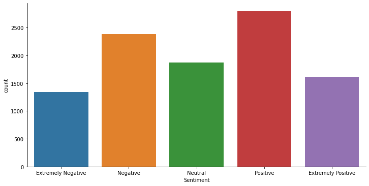
df['Sentiment'].value_counts(1)
Positive 0.2799
Negative 0.2383
Neutral 0.1870
Extremely Positive 0.1610
Extremely Negative 0.1338
Name: Sentiment, dtype: float64
The dataset has 5 sentiment ratings ranging from Extremely Negative to Extremely Positive. - The classes are approximately balanced, but The Extreme sentiments and Neutral sentiments have fewer obserations
Making a SimpleSentiment column as a 3-class column#
simple_sentiment_mapper = {'Extremely Negative':"Negative",
'Negative':'Negative',
'Neutral':'Neutral',
'Positive':'Positive',
'Extremely Positive':'Positive'}
df['SimpleSentiment'] = df["Sentiment"].replace(simple_sentiment_mapper)
df["SimpleSentiment"].value_counts(1,dropna=False)
Positive 0.4409
Negative 0.3721
Neutral 0.1870
Name: SimpleSentiment, dtype: float64
## Overall sentiment distribution
sns.catplot(data=df,x='SimpleSentiment',kind='count',
order=['Negative','Neutral','Positive'],aspect=2)
<seaborn.axisgrid.FacetGrid at 0x7f931c061940>
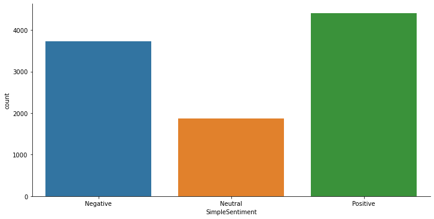
The simpler 3 class version of Sentiment creates a class imbalance issue with neutral tweets having the fewest observations.
Exploring Location#
## How many locations?
location_counts = df['Location'].value_counts()
location_counts.head(40)
Unknown 2087
United States 146
London, England 136
London 135
New York, NY 96
Washington, DC 93
United Kingdom 79
Los Angeles, CA 73
India 70
Australia 65
USA 62
UK 50
Canada 46
Global 43
England, United Kingdom 42
Atlanta, GA 42
Toronto, Ontario 39
San Francisco, CA 38
Boston, MA 37
California, USA 36
Chicago, IL 34
Toronto 33
London, UK 33
New York, USA 31
Seattle, WA 27
Lagos, Nigeria 26
Austin, TX 23
Sydney, New South Wales 23
New York 23
Mumbai, India 23
Mumbai 23
NYC 22
New Delhi, India 22
Houston, TX 21
Las Vegas, NV 21
New York City 21
Florida, USA 20
Nairobi, Kenya 20
Philadelphia, PA 20
Los Angeles 20
Name: Location, dtype: int64
Will analyze locations with more than 100 tweets.
## Visualize locations with >100 tweets
frequent_locations = location_counts[(location_counts>100)&(location_counts<6000)]
ax = frequent_locations.sort_values().plot(kind='barh',figsize=(8,5))
ax.set(xlabel='Counts',ylabel='Location',title='Locations with >100 Tweets');
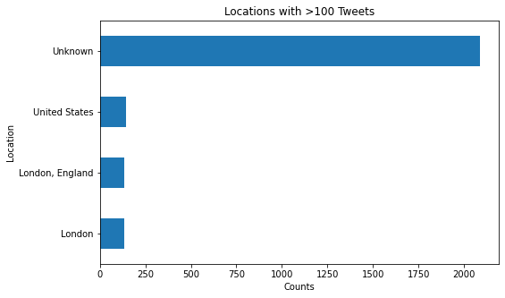
## Saving just most frequent locations
df_freq_location = df[df['Location'].isin(frequent_locations.index)]
df_freq_location
| UserName | ScreenName | Location | TweetAt | OriginalTweet | Sentiment | SimpleSentiment | |
|---|---|---|---|---|---|---|---|
| 36843 | 40641 | 85593 | Unknown | 2020-10-04 | Finally stocked up after being down to our las... | Positive | Positive |
| 25359 | 29158 | 74110 | Unknown | 2020-03-31 | If someone is willing to supply testing kits a... | Extremely Positive | Positive |
| 37234 | 41032 | 85984 | Unknown | 2020-10-04 | shibley And a point worthy of note given no on... | Positive | Positive |
| 10757 | 14556 | 59508 | Unknown | 2020-03-20 | When people who said 'you don't want to end up... | Positive | Positive |
| 11611 | 15410 | 60362 | London | 2020-03-20 | Is panic buying irrational?\r\r\n\r\r\nMicroec... | Extremely Negative | Negative |
| ... | ... | ... | ... | ... | ... | ... | ... |
| 149 | 3948 | 48900 | London | 2020-03-16 | First shops to make this effort could really w... | Extremely Positive | Positive |
| 5227 | 9026 | 53978 | Unknown | 2020-03-18 | EveryoneÃÂs been panic buying bread and food... | Negative | Negative |
| 34273 | 38071 | 83023 | Unknown | 2020-08-04 | Online grocery delivery orders surge as millio... | Neutral | Neutral |
| 37546 | 41344 | 86296 | Unknown | 2020-10-04 | ÃÂSo when you buy at our market, youÃÂre s... | Positive | Positive |
| 13058 | 16857 | 61809 | Unknown | 2020-03-21 | Possibly controversial but whatÃÂs the infec... | Negative | Negative |
2504 rows × 7 columns
Sentiment Word Usage#
## save a dictionary with each sentiment's df saved under the sentiment type
sent_dict = {}
for sentiment in df["SimpleSentiment"].unique():
sent_dict[sentiment] = df[ df['Sentiment']==sentiment]
sent_dict.keys()
/opt/anaconda3/envs/learn-env-new/lib/python3.8/site-packages/ipykernel/ipkernel.py:287: DeprecationWarning: `should_run_async` will not call `transform_cell` automatically in the future. Please pass the result to `transformed_cell` argument and any exception that happen during thetransform in `preprocessing_exc_tuple` in IPython 7.17 and above.
and should_run_async(code)
dict_keys(['Positive', 'Negative', 'Neutral'])
tokenizer = TweetTokenizer(preserve_case=False)
/opt/anaconda3/envs/learn-env-new/lib/python3.8/site-packages/ipykernel/ipkernel.py:287: DeprecationWarning: `should_run_async` will not call `transform_cell` automatically in the future. Please pass the result to `transformed_cell` argument and any exception that happen during thetransform in `preprocessing_exc_tuple` in IPython 7.17 and above.
and should_run_async(code)
## save stopwords
stopwords_list = nltk.corpus.stopwords.words('english')
stopwords_list.extend(string.punctuation)
stopwords_list.extend(['http','https','co'])
covid_stopwords = [*stopwords_list, 'coronavirus','covid',
'covid19','covid_19','covid2019',"#coronavirus",
"#covid_19",'']
def prep_wordcloud_corpus(df,stopwords_list,text_col='OriginalTweet'):
## save neg_corpus and remove stopwords
corpus = tokenizer.tokenize(' '.join(df[text_col]))
corpus = [w.encode('ascii','ignore').decode() for w in corpus if w not in stopwords_list]
return corpus
corpus_dict = {sentiment:prep_wordcloud_corpus(sents,covid_stopwords) for sentiment,sents \
in sent_dict.items()}
# neg_corpus = prep_wordcloud_corpus(neg_sents)
# pos_corpus = prep_wordcloud_corpus(pos_sents)
# neut_corpus = prep_wordcloud_corpus(neu_sents)
corpus_dict['Negative'][:5]
/opt/anaconda3/envs/learn-env-new/lib/python3.8/site-packages/ipykernel/ipkernel.py:287: DeprecationWarning: `should_run_async` will not call `transform_cell` automatically in the future. Please pass the result to `transformed_cell` argument and any exception that happen during thetransform in `preprocessing_exc_tuple` in IPython 7.17 and above.
and should_run_async(code)
['lowest', 'prices', '#quatchicam', '#socialdistancing', '#coronacrisis']
## MOST FREQUENT NEGATIVE TWEET WORDS
neg_freq = nltk.FreqDist(corpus_dict['Negative'])
neg_freq_df = pd.DataFrame(neg_freq.most_common(25),columns=['Word','Frequency'])
neg_freq_df
/opt/anaconda3/envs/learn-env-new/lib/python3.8/site-packages/ipykernel/ipkernel.py:287: DeprecationWarning: `should_run_async` will not call `transform_cell` automatically in the future. Please pass the result to `transformed_cell` argument and any exception that happen during thetransform in `preprocessing_exc_tuple` in IPython 7.17 and above.
and should_run_async(code)
| Word | Frequency | |
|---|---|---|
| 0 | 2447 | |
| 1 | 19 | 745 |
| 2 | prices | 586 |
| 3 | food | 480 |
| 4 | supermarket | 399 |
| 5 | people | 381 |
| 6 | store | 360 |
| 7 | grocery | 325 |
| 8 | #covid19 | 269 |
| 9 | demand | 228 |
| 10 | consumer | 207 |
| 11 | ... | 196 |
| 12 | panic | 177 |
| 13 | shopping | 168 |
| 14 | get | 166 |
| 15 | online | 157 |
| 16 | need | 156 |
| 17 | pandemic | 155 |
| 18 | oil | 144 |
| 19 | workers | 144 |
| 20 | time | 138 |
| 21 | going | 134 |
| 22 | one | 130 |
| 23 | due | 126 |
| 24 | go | 119 |
ax = neg_freq_df.set_index('Word').sort_values('Frequency').plot(kind='barh')
ax.set(title="25 Most Common Words in Negative Tweets")
/opt/anaconda3/envs/learn-env-new/lib/python3.8/site-packages/ipykernel/ipkernel.py:287: DeprecationWarning: `should_run_async` will not call `transform_cell` automatically in the future. Please pass the result to `transformed_cell` argument and any exception that happen during thetransform in `preprocessing_exc_tuple` in IPython 7.17 and above.
and should_run_async(code)
[Text(0.5, 1.0, '25 Most Common Words in Negative Tweets')]
## MOST FREQUENT NEGATIVE TWEET WORDS
pos_freq = nltk.FreqDist(corpus_dict['Positive'])
pos_freq_df = pd.DataFrame(pos_freq.most_common(25),columns=['Word','Frequency'])
ax = pos_freq_df.set_index('Word').sort_values('Frequency').plot(kind='barh')
ax.set(title="25 Most Common Words in Positive Tweets")
/opt/anaconda3/envs/learn-env-new/lib/python3.8/site-packages/ipykernel/ipkernel.py:287: DeprecationWarning: `should_run_async` will not call `transform_cell` automatically in the future. Please pass the result to `transformed_cell` argument and any exception that happen during thetransform in `preprocessing_exc_tuple` in IPython 7.17 and above.
and should_run_async(code)
[Text(0.5, 1.0, '25 Most Common Words in Positive Tweets')]
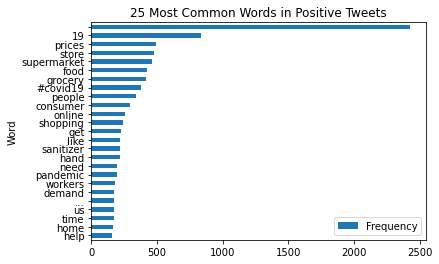
Comparing All 3 Sentiments Word Frequencies via WordClouds#
### Specify params for all 3 word clouds
cloud_stopwords = [*stopwords_list, 'coronavirus','covid',
'covid19','covid_19','covid2019']
cloud_kws = dict(collocations=True,normalize_plurals=False,
stopwords=cloud_stopwords,
width=1200,min_word_length=2,
height=800,min_font_size=10)
## Tweaking final params aand generating clouds
wordcloud_dict = {}
wordcloud_dict['Negative'] = WordCloud(**cloud_kws,
colormap='Reds'
).generate(' '.join(corpus_dict['Negative']))
wordcloud_dict['Neutral'] = WordCloud(**cloud_kws,
colormap='Greys'
).generate(' '.join(corpus_dict['Neutral']))
wordcloud_dict['Positive'] = WordCloud(**cloud_kws,
colormap='Greens'
).generate(' '.join(corpus_dict['Positive']))
/opt/anaconda3/envs/learn-env-new/lib/python3.8/site-packages/ipykernel/ipkernel.py:287: DeprecationWarning: `should_run_async` will not call `transform_cell` automatically in the future. Please pass the result to `transformed_cell` argument and any exception that happen during thetransform in `preprocessing_exc_tuple` in IPython 7.17 and above.
and should_run_async(code)
## Plot all 3 classes
fig, ax = plt.subplots(nrows=len(wordcloud_dict.keys()), figsize=(16,20))
title_font = {'fontweight':'bold','fontsize':20}
# cmap_list = ['Reds','Greens','Greys']
i=0
for sentiment, cloud in wordcloud_dict.items():
ax[i].imshow(cloud)
ax[i].set_title(sentiment,fontdict=title_font)
ax[i].axis('off')
i+=1
plt.tight_layout()
/opt/anaconda3/envs/learn-env-new/lib/python3.8/site-packages/ipykernel/ipkernel.py:287: DeprecationWarning: `should_run_async` will not call `transform_cell` automatically in the future. Please pass the result to `transformed_cell` argument and any exception that happen during thetransform in `preprocessing_exc_tuple` in IPython 7.17 and above.
and should_run_async(code)
## Plot pos and neg side by side
fig, ax = plt.subplots(ncols=2, figsize=(16,20))
title_font = {'fontweight':'bold','fontsize':20}
sentiment = 'Positive'
ax[0].imshow(wordcloud_dict[sentiment])
ax[0].set_title(sentiment,fontdict=title_font)
ax[0].axis('off')
sentiment = 'Negative'
ax[1].imshow(wordcloud_dict[sentiment])
ax[1].set_title(sentiment,fontdict=title_font)
ax[1].axis('off')
plt.tight_layout()
/opt/anaconda3/envs/learn-env-new/lib/python3.8/site-packages/ipykernel/ipkernel.py:287: DeprecationWarning: `should_run_async` will not call `transform_cell` automatically in the future. Please pass the result to `transformed_cell` argument and any exception that happen during thetransform in `preprocessing_exc_tuple` in IPython 7.17 and above.
and should_run_async(code)
MODEL#
Make X,y + train_test_spit#
## Make a dict mapper for target
target_map = dict(zip(sentiment_order,range(len(sentiment_order)+1)))
target_map
/opt/anaconda3/envs/learn-env-new/lib/python3.8/site-packages/ipykernel/ipkernel.py:287: DeprecationWarning: `should_run_async` will not call `transform_cell` automatically in the future. Please pass the result to `transformed_cell` argument and any exception that happen during thetransform in `preprocessing_exc_tuple` in IPython 7.17 and above.
and should_run_async(code)
{'Extremely Negative': 0,
'Negative': 1,
'Neutral': 2,
'Positive': 3,
'Extremely Positive': 4}
## mapper for Simpler 3-class target
target_map_3class = {'Extremely Negative':0,
'Negative':0,
'Neutral':1,
'Positive':2,
'Extremely Positive':2}
target_map_3class
/opt/anaconda3/envs/learn-env-new/lib/python3.8/site-packages/ipykernel/ipkernel.py:287: DeprecationWarning: `should_run_async` will not call `transform_cell` automatically in the future. Please pass the result to `transformed_cell` argument and any exception that happen during thetransform in `preprocessing_exc_tuple` in IPython 7.17 and above.
and should_run_async(code)
{'Extremely Negative': 0,
'Negative': 0,
'Neutral': 1,
'Positive': 2,
'Extremely Positive': 2}
## making numeric target col
df['target']=df['Sentiment'].map(target_map)
df['target'].value_counts(dropna=False,normalize=True)
/opt/anaconda3/envs/learn-env-new/lib/python3.8/site-packages/ipykernel/ipkernel.py:287: DeprecationWarning: `should_run_async` will not call `transform_cell` automatically in the future. Please pass the result to `transformed_cell` argument and any exception that happen during thetransform in `preprocessing_exc_tuple` in IPython 7.17 and above.
and should_run_async(code)
3 0.2799
1 0.2383
2 0.1870
4 0.1610
0 0.1338
Name: target, dtype: float64
df['target_3class']=df['Sentiment'].map(target_map_3class)
df['target_3class'].value_counts(dropna=False,normalize=True)
/opt/anaconda3/envs/learn-env-new/lib/python3.8/site-packages/ipykernel/ipkernel.py:287: DeprecationWarning: `should_run_async` will not call `transform_cell` automatically in the future. Please pass the result to `transformed_cell` argument and any exception that happen during thetransform in `preprocessing_exc_tuple` in IPython 7.17 and above.
and should_run_async(code)
2 0.4409
0 0.3721
1 0.1870
Name: target_3class, dtype: float64
X = df['OriginalTweet'].copy()
y = df['target_3class'].copy()#.map(target_map)
y.value_counts(1)
/opt/anaconda3/envs/learn-env-new/lib/python3.8/site-packages/ipykernel/ipkernel.py:287: DeprecationWarning: `should_run_async` will not call `transform_cell` automatically in the future. Please pass the result to `transformed_cell` argument and any exception that happen during thetransform in `preprocessing_exc_tuple` in IPython 7.17 and above.
and should_run_async(code)
2 0.4409
0 0.3721
1 0.1870
Name: target_3class, dtype: float64
X_train, X_test, y_train, y_test = train_test_split(X,y,test_size=0.4,
random_state=321)
/opt/anaconda3/envs/learn-env-new/lib/python3.8/site-packages/ipykernel/ipkernel.py:287: DeprecationWarning: `should_run_async` will not call `transform_cell` automatically in the future. Please pass the result to `transformed_cell` argument and any exception that happen during thetransform in `preprocessing_exc_tuple` in IPython 7.17 and above.
and should_run_async(code)
from sklearn import set_config
set_config(display='diagram')
/opt/anaconda3/envs/learn-env-new/lib/python3.8/site-packages/ipykernel/ipkernel.py:287: DeprecationWarning: `should_run_async` will not call `transform_cell` automatically in the future. Please pass the result to `transformed_cell` argument and any exception that happen during thetransform in `preprocessing_exc_tuple` in IPython 7.17 and above.
and should_run_async(code)
## From tjhe lessons
from nltk import regexp_tokenize
pattern = r"([a-zA-Z]+(?:'[a-z]+)?)"
regexp_tokenize("I can't wait for summer. Ain't it grand",pattern)
/opt/anaconda3/envs/learn-env-new/lib/python3.8/site-packages/ipykernel/ipkernel.py:287: DeprecationWarning: `should_run_async` will not call `transform_cell` automatically in the future. Please pass the result to `transformed_cell` argument and any exception that happen during thetransform in `preprocessing_exc_tuple` in IPython 7.17 and above.
and should_run_async(code)
['I', "can't", 'wait', 'for', 'summer', "Ain't", 'it', 'grand']
tokenizer = TweetTokenizer(preserve_case=False,strip_handles=False)
tokenizer.tokenize("I can't wait for summer. Ain't it grand")
/opt/anaconda3/envs/learn-env-new/lib/python3.8/site-packages/ipykernel/ipkernel.py:287: DeprecationWarning: `should_run_async` will not call `transform_cell` automatically in the future. Please pass the result to `transformed_cell` argument and any exception that happen during thetransform in `preprocessing_exc_tuple` in IPython 7.17 and above.
and should_run_async(code)
['i', "can't", 'wait', 'for', 'summer', '.', "ain't", 'it', 'grand']
# abbrev_dict= {' OT ':'overtime',
# 'HR':'human resources'}
/opt/anaconda3/envs/learn-env-new/lib/python3.8/site-packages/ipykernel/ipkernel.py:287: DeprecationWarning: `should_run_async` will not call `transform_cell` automatically in the future. Please pass the result to `transformed_cell` argument and any exception that happen during thetransform in `preprocessing_exc_tuple` in IPython 7.17 and above.
and should_run_async(code)
df['TweetsNoApos'] = df['OriginalTweet'].map(lambda x: x.replace("'",''))
df
/opt/anaconda3/envs/learn-env-new/lib/python3.8/site-packages/ipykernel/ipkernel.py:287: DeprecationWarning: `should_run_async` will not call `transform_cell` automatically in the future. Please pass the result to `transformed_cell` argument and any exception that happen during thetransform in `preprocessing_exc_tuple` in IPython 7.17 and above.
and should_run_async(code)
| UserName | ScreenName | Location | TweetAt | OriginalTweet | Sentiment | SimpleSentiment | target | target_3class | TweetsNoApos | |
|---|---|---|---|---|---|---|---|---|---|---|
| 5002 | 8801 | 53753 | Burlington, VT | 2020-03-18 | Why consider $corn allocations? Have you seen ... | Positive | Positive | 3 | 2 | Why consider $corn allocations? Have you seen ... |
| 8296 | 12095 | 57047 | Ho Chi Minh City. Vietnam | 2020-03-19 | #PetroVietnam said on Wednesday it is consider... | Extremely Negative | Negative | 0 | 0 | #PetroVietnam said on Wednesday it is consider... |
| 10123 | 13922 | 58874 | Australia | 2020-03-20 | Planning a after the ends in southeast Need a ... | Neutral | Neutral | 2 | 1 | Planning a after the ends in southeast Need a ... |
| 10832 | 14631 | 59583 | europe | 2020-03-20 | With all the panic buying and hoarding going o... | Positive | Positive | 3 | 2 | With all the panic buying and hoarding going o... |
| 30628 | 34427 | 79379 | Miami, FL | 2020-06-04 | @DeniseC66303455 @DailyCaller With oil prices ... | Extremely Negative | Negative | 0 | 0 | @DeniseC66303455 @DailyCaller With oil prices ... |
| ... | ... | ... | ... | ... | ... | ... | ... | ... | ... | ... |
| 37546 | 41344 | 86296 | Unknown | 2020-10-04 | ÃÂSo when you buy at our market, youÃÂre s... | Positive | Positive | 3 | 2 | ÃÂSo when you buy at our market, youÃÂre s... |
| 35867 | 39665 | 84617 | Mississippi, USA | 2020-09-04 | MDOC Horhn MS65 50 MS brown MISSISSIPPI PRISON... | Extremely Negative | Negative | 0 | 0 | MDOC Horhn MS65 50 MS brown MISSISSIPPI PRISON... |
| 2001 | 5800 | 50752 | Convenience Stores Worldwide | 2020-03-17 | Single-use products now in big demand as the p... | Positive | Positive | 3 | 2 | Single-use products now in big demand as the p... |
| 31742 | 35541 | 80493 | NEW DELHI | 2020-07-04 | @drharshvardhan @PMOIndia @narendramodi @aajta... | Positive | Positive | 3 | 2 | @drharshvardhan @PMOIndia @narendramodi @aajta... |
| 13058 | 16857 | 61809 | Unknown | 2020-03-21 | Possibly controversial but whatÃÂs the infec... | Negative | Negative | 1 | 0 | Possibly controversial but whatÃÂs the infec... |
10000 rows × 10 columns
df[df['OriginalTweet'].str.contains("'")]
/opt/anaconda3/envs/learn-env-new/lib/python3.8/site-packages/ipykernel/ipkernel.py:287: DeprecationWarning: `should_run_async` will not call `transform_cell` automatically in the future. Please pass the result to `transformed_cell` argument and any exception that happen during thetransform in `preprocessing_exc_tuple` in IPython 7.17 and above.
and should_run_async(code)
| UserName | ScreenName | Location | TweetAt | OriginalTweet | Sentiment | SimpleSentiment | target | target_3class | TweetsNoApos | |
|---|---|---|---|---|---|---|---|---|---|---|
| 15279 | 19078 | 64030 | Arizona, USA | 2020-03-22 | I've received many emails from business in reg... | Neutral | Neutral | 2 | 1 | Ive received many emails from business in rega... |
| 10757 | 14556 | 59508 | Unknown | 2020-03-20 | When people who said 'you don't want to end up... | Positive | Positive | 3 | 2 | When people who said you dont want to end up s... |
| 29511 | 33310 | 78262 | London, England | 2020-05-04 | It's very sad that bus drivers are on the fron... | Negative | Negative | 1 | 0 | Its very sad that bus drivers are on the front... |
| 4941 | 8740 | 53692 | Biloxi, Mississippi | 2020-03-18 | @HankAllenWX Not here in #WestBiloxi where the... | Negative | Negative | 1 | 0 | @HankAllenWX Not here in #WestBiloxi where the... |
| 14094 | 17893 | 62845 | United States | 2020-03-21 | With myself being in semi-self-quarantine (I s... | Positive | Positive | 3 | 2 | With myself being in semi-self-quarantine (I s... |
| ... | ... | ... | ... | ... | ... | ... | ... | ... | ... | ... |
| 5447 | 9246 | 54198 | California | 2020-03-19 | Social Distancing doesn't have to be a drag, t... | Negative | Negative | 1 | 0 | Social Distancing doesnt have to be a drag, ta... |
| 7314 | 11113 | 56065 | #thesix | 2020-03-19 | HUGS to the mom & pop shop on College Stre... | Extremely Positive | Positive | 4 | 2 | HUGS to the mom & pop shop on College Stre... |
| 25979 | 29778 | 74730 | Morrisville, NC | 2020-01-04 | We've got newly updated info about online shop... | Extremely Positive | Positive | 4 | 2 | Weve got newly updated info about online shopp... |
| 21021 | 24820 | 69772 | Toronto, Ontario | 2020-03-25 | WE ARE OPEN - More hand sanitizer and supplies... | Extremely Positive | Positive | 4 | 2 | WE ARE OPEN - More hand sanitizer and supplies... |
| 20224 | 24023 | 68975 | Unknown | 2020-03-24 | #Hantavirus is not as dangerous as the Coronav... | Negative | Negative | 1 | 0 | #Hantavirus is not as dangerous as the Coronav... |
1572 rows × 10 columns
# "can't" in stopwords_lista
'!' in stopwords_list
stopwords_list.remove('!')
/opt/anaconda3/envs/learn-env-new/lib/python3.8/site-packages/ipykernel/ipkernel.py:287: DeprecationWarning: `should_run_async` will not call `transform_cell` automatically in the future. Please pass the result to `transformed_cell` argument and any exception that happen during thetransform in `preprocessing_exc_tuple` in IPython 7.17 and above.
and should_run_async(code)
'!' in stopwords_list
/opt/anaconda3/envs/learn-env-new/lib/python3.8/site-packages/ipykernel/ipkernel.py:287: DeprecationWarning: `should_run_async` will not call `transform_cell` automatically in the future. Please pass the result to `transformed_cell` argument and any exception that happen during thetransform in `preprocessing_exc_tuple` in IPython 7.17 and above.
and should_run_async(code)
False
## set up text preprocessing pipeline
tokenizer = TweetTokenizer(preserve_case=False,strip_handles=False)
text_pipe = Pipeline([
('vectorizer',CountVectorizer(strip_accents='unicode',
tokenizer=tokenizer.tokenize,
# token_pattern= r"([a-zA-Z]+(?:'[a-z]+)?)",
stop_words=stopwords_list)),
('tfidf',TfidfTransformer())
])
text_pipe
/opt/anaconda3/envs/learn-env-new/lib/python3.8/site-packages/ipykernel/ipkernel.py:287: DeprecationWarning: `should_run_async` will not call `transform_cell` automatically in the future. Please pass the result to `transformed_cell` argument and any exception that happen during thetransform in `preprocessing_exc_tuple` in IPython 7.17 and above.
and should_run_async(code)
Pipeline(steps=[('vectorizer',
CountVectorizer(stop_words=['i', 'me', 'my', 'myself', 'we',
'our', 'ours', 'ourselves', 'you',
"you're", "you've", "you'll",
"you'd", 'your', 'yours',
'yourself', 'yourselves', 'he',
'him', 'his', 'himself', 'she',
"she's", 'her', 'hers', 'herself',
'it', "it's", 'its', 'itself', ...],
strip_accents='unicode',
tokenizer=>)),
('tfidf', TfidfTransformer())]) CountVectorizer(stop_words=['i', 'me', 'my', 'myself', 'we', 'our', 'ours',
'ourselves', 'you', "you're", "you've", "you'll",
"you'd", 'your', 'yours', 'yourself', 'yourselves',
'he', 'him', 'his', 'himself', 'she', "she's",
'her', 'hers', 'herself', 'it', "it's", 'its',
'itself', ...],
strip_accents='unicode',
tokenizer=>) TfidfTransformer()
X_train_vec = text_pipe.fit_transform(X_train)
X_test_vec = text_pipe.transform(X_test)
/opt/anaconda3/envs/learn-env-new/lib/python3.8/site-packages/ipykernel/ipkernel.py:287: DeprecationWarning: `should_run_async` will not call `transform_cell` automatically in the future. Please pass the result to `transformed_cell` argument and any exception that happen during thetransform in `preprocessing_exc_tuple` in IPython 7.17 and above.
and should_run_async(code)
resulting_words = text_pipe['vectorizer'].get_feature_names()
resulting_words[:10]
/opt/anaconda3/envs/learn-env-new/lib/python3.8/site-packages/ipykernel/ipkernel.py:287: DeprecationWarning: `should_run_async` will not call `transform_cell` automatically in the future. Please pass the result to `transformed_cell` argument and any exception that happen during thetransform in `preprocessing_exc_tuple` in IPython 7.17 and above.
and should_run_async(code)
['aa',
'aaa',
'aacxqg',
'aaefyolyb',
'aagzjfou',
'aajtak',
'aaltouniversity',
'aang',
'aaron',
'aaronchown']
"can't" in resulting_words
/opt/anaconda3/envs/learn-env-new/lib/python3.8/site-packages/ipykernel/ipkernel.py:287: DeprecationWarning: `should_run_async` will not call `transform_cell` automatically in the future. Please pass the result to `transformed_cell` argument and any exception that happen during thetransform in `preprocessing_exc_tuple` in IPython 7.17 and above.
and should_run_async(code)
True
TSNE#
from sklearn.manifold import TSNE
import plotly.express as px
from mpl_toolkits.mplot3d import Axes3D
## TSNE For Visualizing High Dimensional Data
t_sne_object_3d = TSNE(n_components=3,n_iter=500)
transformed_data_3d = t_sne_object_3d.fit_transform(X_train_vec)
transformed_data_3d
array([[-22.931969 , 0.4693043, -16.56662 ],
[-11.716256 , 12.570934 , -3.224143 ],
[-18.995094 , 11.667617 , -16.317331 ],
...,
[ -2.6166272, -15.188698 , -10.352359 ],
[ -0.6885751, 28.190844 , 8.547425 ],
[ 17.503862 , 13.014337 , 3.449941 ]], dtype=float32)
## Saving each sentiment as its own matrix for plotting
neg_tsne = transformed_data_3d[y_train==0]
neut_tsne = transformed_data_3d[y_train==1]
pos_tsne = transformed_data_3d[y_train==2]
## Visualize TSNE
fig = plt.figure(figsize=(20,10))
ax = fig.add_subplot(projection='3d')
ax.scatter(neg_tsne[:,0],neg_tsne[:,1],
neg_tsne[:,2],s=1, c='red',label='Negative')
ax.scatter(pos_tsne[:,0],pos_tsne[:,1],
pos_tsne[:,2],s=1,c='green',label='Positive')
ax.scatter(neut_tsne[:,0],neut_tsne[:,1],
neut_tsne[:,2],s=1,c='gray',label='Neutral')
ax.legend()
# ax.view_init(30, 10)
fig.tight_layout()
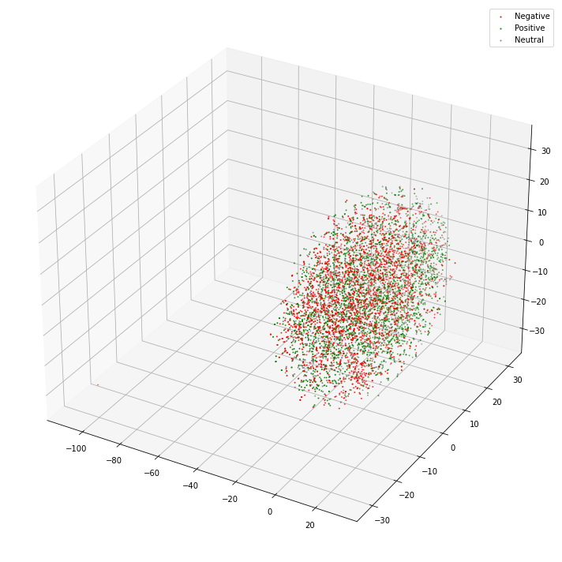
Latent Dirichilet Allocation#
from sklearn.decomposition import LatentDirichletAllocation
lda = LatentDirichletAllocation(n_components=5,verbose=1,random_state=0)
lda.fit(X_train_vec)
iteration: 1 of max_iter: 10
iteration: 2 of max_iter: 10
iteration: 3 of max_iter: 10
iteration: 4 of max_iter: 10
iteration: 5 of max_iter: 10
iteration: 6 of max_iter: 10
iteration: 7 of max_iter: 10
iteration: 8 of max_iter: 10
iteration: 9 of max_iter: 10
iteration: 10 of max_iter: 10
LatentDirichletAllocation(n_components=5, random_state=0, verbose=1)
PyLDAvis#
# !pip install pyldavis
import pyLDAvis
import pyLDAvis.sklearn as lda_sk
pyLDAvis.enable_notebook()
lda_sk.prepare(lda,X_train_vec,text_pipe['vectorizer'])
/opt/anaconda3/envs/learn-env-new/lib/python3.8/site-packages/ipykernel/ipkernel.py:287: DeprecationWarning: `should_run_async` will not call `transform_cell` automatically in the future. Please pass the result to `transformed_cell` argument and any exception that happen during thetransform in `preprocessing_exc_tuple` in IPython 7.17 and above.
and should_run_async(code)
raise Exception('stop here for study group')
/opt/anaconda3/envs/learn-env-new/lib/python3.8/site-packages/ipykernel/ipkernel.py:287: DeprecationWarning: `should_run_async` will not call `transform_cell` automatically in the future. Please pass the result to `transformed_cell` argument and any exception that happen during thetransform in `preprocessing_exc_tuple` in IPython 7.17 and above.
and should_run_async(code)
---------------------------------------------------------------------------
Exception Traceback (most recent call last)
<ipython-input-46-ce27d4c42e00> in <module>
----> 1 raise Exception('stop here for study group')
Exception: stop here for study group
Models#
Model Evaluation Functions#
def evaluate_classification(model, X_test_tf,y_test,cmap='Greens',
normalize='true',classes=None,figsize=(10,4),
X_train = None, y_train = None,):
"""Evaluates a scikit-learn binary classification model.
Args:
model (classifier): any sklearn classification model.
X_test_tf (Frame or Array): X data
y_test (Series or Array): y data
cmap (str, optional): Colormap for confusion matrix. Defaults to 'Greens'.
normalize (str, optional): normalize argument for plot_confusion_matrix.
Defaults to 'true'.
classes (list, optional): List of class names for display. Defaults to None.
figsize (tuple, optional): figure size Defaults to (8,4).
X_train (Frame or Array, optional): If provided, compare model.score
for train and test. Defaults to None.
y_train (Series or Array, optional): If provided, compare model.score
for train and test. Defaults to None.
"""
## Get Predictions and Classification Report
y_hat_test = model.predict(X_test_tf)
print(metrics.classification_report(y_test, y_hat_test,target_names=classes))
## Plot Confusion Matrid and roc curve
fig,ax = plt.subplots(ncols=2, figsize=figsize)
metrics.plot_confusion_matrix(model, X_test_tf,y_test,cmap=cmap,
normalize=normalize,display_labels=classes,
ax=ax[0])
## if roc curve erorrs, delete second ax
try:
curve = metrics.plot_roc_curve(model,X_test_tf,y_test,ax=ax[1])
curve.ax_.grid()
curve.ax_.plot([0,1],[0,1],ls=':')
fig.tight_layout()
except:
fig.delaxes(ax[1])
plt.show()
## Add comparing Scores if X_train and y_train provided.
if (X_train is not None) & (y_train is not None):
print(f"Training Score = {model.score(X_train,y_train):.2f}")
print(f"Test Score = {model.score(X_test_tf,y_test):.2f}")
def plot_importance(tree, X_train_df, top_n=20,figsize=(10,10)):
df_importance = pd.Series(tree.feature_importances_,
index=X_train_df.columns)
df_importance.sort_values(ascending=True).tail(top_n).plot(
kind='barh',figsize=figsize,title='Feature Importances',
ylabel='Feature',)
return df_importance
/opt/anaconda3/envs/learn-env-new/lib/python3.8/site-packages/ipykernel/ipkernel.py:287: DeprecationWarning: `should_run_async` will not call `transform_cell` automatically in the future. Please pass the result to `transformed_cell` argument and any exception that happen during thetransform in `preprocessing_exc_tuple` in IPython 7.17 and above.
and should_run_async(code)
Modeling Logistics#
Use the same variable name for each of the types of models to fit to save memory.
After evaluating, save the model with joblib as f”last_{model type}.joblib”
Load up the models after training if want to get insights or compare.
import os,joblib
save_path = "./models/"
os.makedirs(save_path, exist_ok=True)
sorted(os.listdir(save_path))
/opt/anaconda3/envs/learn-env-new/lib/python3.8/site-packages/ipykernel/ipkernel.py:287: DeprecationWarning: `should_run_async` will not call `transform_cell` automatically in the future. Please pass the result to `transformed_cell` argument and any exception that happen during thetransform in `preprocessing_exc_tuple` in IPython 7.17 and above.
and should_run_async(code)
[]
Model 1: LogisticRegression#
from sklearn.linear_model import LogisticRegression,LogisticRegressionCV
from sklearn import metrics
/opt/anaconda3/envs/learn-env-new/lib/python3.8/site-packages/ipykernel/ipkernel.py:287: DeprecationWarning: `should_run_async` will not call `transform_cell` automatically in the future. Please pass the result to `transformed_cell` argument and any exception that happen during thetransform in `preprocessing_exc_tuple` in IPython 7.17 and above.
and should_run_async(code)
Vanilla LogReg, no regularization#
y_train.value_counts(1).sort_index()
/opt/anaconda3/envs/learn-env-new/lib/python3.8/site-packages/ipykernel/ipkernel.py:287: DeprecationWarning: `should_run_async` will not call `transform_cell` automatically in the future. Please pass the result to `transformed_cell` argument and any exception that happen during thetransform in `preprocessing_exc_tuple` in IPython 7.17 and above.
and should_run_async(code)
0 0.374667
1 0.185667
2 0.439667
Name: target_3class, dtype: float64
sns.countplot(y_train)
/opt/anaconda3/envs/learn-env-new/lib/python3.8/site-packages/ipykernel/ipkernel.py:287: DeprecationWarning: `should_run_async` will not call `transform_cell` automatically in the future. Please pass the result to `transformed_cell` argument and any exception that happen during thetransform in `preprocessing_exc_tuple` in IPython 7.17 and above.
and should_run_async(code)
<AxesSubplot:xlabel='target_3class', ylabel='count'>
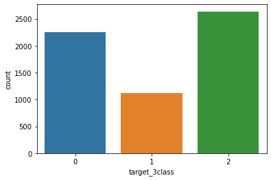
## Log reg- not using classweight
clf = LogisticRegression(C=1e12, max_iter=300)
clf.fit(X_train_vec,y_train)
evaluate_classification(clf,X_test_vec, y_test,X_train = X_train_vec,y_train=y_train)
joblib.dump(clf, f"{save_path}log_reg_ce12.joblib")
/opt/anaconda3/envs/learn-env-new/lib/python3.8/site-packages/ipykernel/ipkernel.py:287: DeprecationWarning: `should_run_async` will not call `transform_cell` automatically in the future. Please pass the result to `transformed_cell` argument and any exception that happen during thetransform in `preprocessing_exc_tuple` in IPython 7.17 and above.
and should_run_async(code)
precision recall f1-score support
0 0.71 0.72 0.71 1473
1 0.52 0.48 0.50 756
2 0.74 0.75 0.75 1771
accuracy 0.69 4000
macro avg 0.66 0.65 0.65 4000
weighted avg 0.69 0.69 0.69 4000
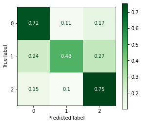
Training Score = 1.00
Test Score = 0.69
['./models/log_reg_ce12.joblib']
clf = LogisticRegression(C=1e12,class_weight='balanced', max_iter=300)
clf.fit(X_train_vec,y_train)
evaluate_classification(clf,X_test_vec, y_test,X_train = X_train_vec,y_train=y_train)
joblib.dump(clf, f"{save_path}log_reg_ce12.joblib")
/opt/anaconda3/envs/learn-env-new/lib/python3.8/site-packages/ipykernel/ipkernel.py:287: DeprecationWarning: `should_run_async` will not call `transform_cell` automatically in the future. Please pass the result to `transformed_cell` argument and any exception that happen during thetransform in `preprocessing_exc_tuple` in IPython 7.17 and above.
and should_run_async(code)
precision recall f1-score support
0 0.69 0.74 0.71 1473
1 0.55 0.41 0.47 756
2 0.73 0.76 0.75 1771
accuracy 0.69 4000
macro avg 0.66 0.64 0.64 4000
weighted avg 0.68 0.69 0.68 4000
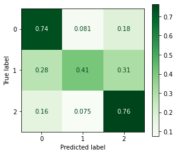
Training Score = 1.00
Test Score = 0.69
['./models/log_reg_ce12.joblib']
GridSearch for C#
clf = LogisticRegressionCV(class_weight='balanced',max_iter=300,cv=3,
scoring='recall_macro',n_jobs=-1,verbose=2)
clf.fit(X_train_vec,y_train)
evaluate_classification(clf,X_test_vec,y_test,X_train = X_train_vec,y_train=y_train)
print(clf.C_)
joblib.dump(clf, f"{save_path}log_reg_cv.joblib")
/opt/anaconda3/envs/learn-env-new/lib/python3.8/site-packages/ipykernel/ipkernel.py:287: DeprecationWarning: `should_run_async` will not call `transform_cell` automatically in the future. Please pass the result to `transformed_cell` argument and any exception that happen during thetransform in `preprocessing_exc_tuple` in IPython 7.17 and above.
and should_run_async(code)
[Parallel(n_jobs=-1)]: Using backend LokyBackend with 12 concurrent workers.
[Parallel(n_jobs=-1)]: Done 3 out of 3 | elapsed: 16.3s finished
precision recall f1-score support
0 0.71 0.71 0.71 1473
1 0.52 0.55 0.53 756
2 0.76 0.73 0.74 1771
accuracy 0.69 4000
macro avg 0.66 0.66 0.66 4000
weighted avg 0.69 0.69 0.69 4000
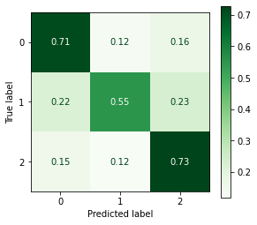
Training Score = 0.99
Test Score = 0.66
[2.7825594 2.7825594 2.7825594]
['./models/log_reg_cv.joblib']
best_C = 2.7825594
clf = LogisticRegression(C=best_C,class_weight='balanced', max_iter=300)
clf.fit(X_train_vec,y_train)
evaluate_classification(clf,X_test_vec,y_test,X_train = X_train_vec,y_train=y_train)
joblib.dump(clf,f"{save_path}log_reg_best_C.joblib")
LogReg Full GridSearch#
## logreg gridsearch
clf = LogisticRegression(class_weight='balanced',solver='saga')
params = {'C':[1.0,3,10],
'penalty':['elasticnet','l2','l1']
}
gridsearch = GridSearchCV(clf,params,cv=3, scoring='recall_macro',
verbose=True, n_jobs=-1)
gridsearch.fit(X_train_vec,y_train)
print(gridsearch.best_params_)
evaluate_classification(gridsearch.best_estimator_, X_test_vec,y_test,
X_train = X_train_vec,y_train=y_train)
joblib.dump(gridsearch.best_estimator_,f"{save_path}gridsearch_log_reg.joblib")
LogReg+Text Pipe GridSearch#
## set up text preprocessing pipeline
tokenizer = TweetTokenizer(preserve_case=False,strip_handles=False)
text_pipe_grid = Pipeline([
('vectorizer',CountVectorizer(strip_accents='unicode',
tokenizer=tokenizer.tokenize,
stop_words=None)),#=stopwords_list)),
('tfidf',TfidfTransformer())
])
full_pipe = Pipeline([
('text',text_pipe_grid),
('clf',LogisticRegression(class_weight='balanced',solver='saga'))
])
full_pipe
/opt/anaconda3/envs/learn-env-new/lib/python3.8/site-packages/ipykernel/ipkernel.py:287: DeprecationWarning: `should_run_async` will not call `transform_cell` automatically in the future. Please pass the result to `transformed_cell` argument and any exception that happen during thetransform in `preprocessing_exc_tuple` in IPython 7.17 and above.
and should_run_async(code)
Pipeline(steps=[('text',
Pipeline(steps=[('vectorizer',
CountVectorizer(strip_accents='unicode',
tokenizer=>)),
('tfidf', TfidfTransformer())])),
('clf',
LogisticRegression(class_weight='balanced', solver='saga'))]) Pipeline(steps=[('vectorizer',
CountVectorizer(strip_accents='unicode',
tokenizer=>)),
('tfidf', TfidfTransformer())]) CountVectorizer(strip_accents='unicode',
tokenizer=>) TfidfTransformer()
LogisticRegression(class_weight='balanced', solver='saga')
## Checking params for text
full_pipe.named_steps['text'].named_steps['vectorizer']
/opt/anaconda3/envs/learn-env-new/lib/python3.8/site-packages/ipykernel/ipkernel.py:287: DeprecationWarning: `should_run_async` will not call `transform_cell` automatically in the future. Please pass the result to `transformed_cell` argument and any exception that happen during thetransform in `preprocessing_exc_tuple` in IPython 7.17 and above.
and should_run_async(code)
CountVectorizer(strip_accents='unicode',
tokenizer=>) ## logreg gridsearch
# clf = LogisticRegression(class_weight='balanced',solver='saga')
full_pipe.named_steps['clf'] = LogisticRegression(class_weight='balanced',penalty='l1',
solver='sag')
params = {'clf__C':[1,3,5,10],
# 'clf__solver':['saga','sag'],
# 'text__vectorizer__stop_words':[None, stopwords_list],
'text__vectorizer__tokenizer':[tokenizer.tokenize, lambda x: regexp_tokenize(x, pattern)]
}
gridsearch = GridSearchCV(full_pipe,params,cv=3, scoring='f1_macro',
verbose=2, n_jobs=-1)
gridsearch.fit(X_train,y_train)
print(gridsearch.best_params_)
evaluate_classification(gridsearch.best_estimator_, X_test,y_test,
X_train = X_train,y_train=y_train)
# joblib.dump(gridsearch.best_estimator_,f"{save_path}gridsearch_log_reg.joblib")
/opt/anaconda3/envs/learn-env-new/lib/python3.8/site-packages/ipykernel/ipkernel.py:287: DeprecationWarning: `should_run_async` will not call `transform_cell` automatically in the future. Please pass the result to `transformed_cell` argument and any exception that happen during thetransform in `preprocessing_exc_tuple` in IPython 7.17 and above.
and should_run_async(code)
[Parallel(n_jobs=-1)]: Using backend LokyBackend with 12 concurrent workers.
Fitting 3 folds for each of 8 candidates, totalling 24 fits
[Parallel(n_jobs=-1)]: Done 14 out of 24 | elapsed: 5.8s remaining: 4.2s
[Parallel(n_jobs=-1)]: Done 24 out of 24 | elapsed: 7.9s finished
/opt/anaconda3/envs/learn-env-new/lib/python3.8/site-packages/sklearn/model_selection/_search.py:844: DeprecationWarning: `np.int` is a deprecated alias for the builtin `int`. To silence this warning, use `int` by itself. Doing this will not modify any behavior and is safe. When replacing `np.int`, you may wish to use e.g. `np.int64` or `np.int32` to specify the precision. If you wish to review your current use, check the release note link for additional information.
Deprecated in NumPy 1.20; for more details and guidance: https://numpy.org/devdocs/release/1.20.0-notes.html#deprecations
dtype=np.int)
{'clf__C': 5, 'text__vectorizer__tokenizer': <bound method TweetTokenizer.tokenize of <nltk.tokenize.casual.TweetTokenizer object at 0x7f92ce0474f0>>}
precision recall f1-score support
0 0.71 0.73 0.72 1473
1 0.55 0.54 0.55 756
2 0.76 0.74 0.75 1771
accuracy 0.70 4000
macro avg 0.67 0.67 0.67 4000
weighted avg 0.70 0.70 0.70 4000
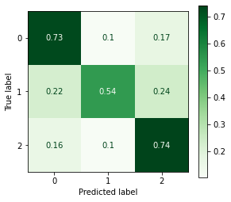
Training Score = 0.99
Test Score = 0.70
---------------------------------------------------------------------------
NameError Traceback (most recent call last)
<ipython-input-94-e4dd77c960a8> in <module>
18 X_train = X_train,y_train=y_train)
19
---> 20 joblib.dump(gridsearch.best_estimator_,f"{save_path}gridsearch_log_reg.joblib")
NameError: name 'joblib' is not defined
RandomForest#
clf = RandomForestClassifier(class_weight='balanced')
clf.fit(X_train_vec,y_train)
evaluate_classification(clf,X_test_vec,y_test,
X_train = X_train_vec, y_train=y_train)
joblib.dump(clf,f"{save_path}random_forest.joblib",compress=3)
/opt/anaconda3/envs/learn-env-new/lib/python3.8/site-packages/ipykernel/ipkernel.py:287: DeprecationWarning: `should_run_async` will not call `transform_cell` automatically in the future. Please pass the result to `transformed_cell` argument and any exception that happen during thetransform in `preprocessing_exc_tuple` in IPython 7.17 and above.
and should_run_async(code)
/opt/anaconda3/envs/learn-env-new/lib/python3.8/site-packages/sklearn/ensemble/_forest.py:569: DeprecationWarning: `np.int` is a deprecated alias for the builtin `int`. To silence this warning, use `int` by itself. Doing this will not modify any behavior and is safe. When replacing `np.int`, you may wish to use e.g. `np.int64` or `np.int32` to specify the precision. If you wish to review your current use, check the release note link for additional information.
Deprecated in NumPy 1.20; for more details and guidance: https://numpy.org/devdocs/release/1.20.0-notes.html#deprecations
y_store_unique_indices = np.zeros(y.shape, dtype=np.int)
/opt/anaconda3/envs/learn-env-new/lib/python3.8/site-packages/sklearn/tree/_classes.py:190: DeprecationWarning: `np.int` is a deprecated alias for the builtin `int`. To silence this warning, use `int` by itself. Doing this will not modify any behavior and is safe. When replacing `np.int`, you may wish to use e.g. `np.int64` or `np.int32` to specify the precision. If you wish to review your current use, check the release note link for additional information.
Deprecated in NumPy 1.20; for more details and guidance: https://numpy.org/devdocs/release/1.20.0-notes.html#deprecations
y_encoded = np.zeros(y.shape, dtype=np.int)
/opt/anaconda3/envs/learn-env-new/lib/python3.8/site-packages/sklearn/tree/_classes.py:190: DeprecationWarning: `np.int` is a deprecated alias for the builtin `int`. To silence this warning, use `int` by itself. Doing this will not modify any behavior and is safe. When replacing `np.int`, you may wish to use e.g. `np.int64` or `np.int32` to specify the precision. If you wish to review your current use, check the release note link for additional information.
Deprecated in NumPy 1.20; for more details and guidance: https://numpy.org/devdocs/release/1.20.0-notes.html#deprecations
y_encoded = np.zeros(y.shape, dtype=np.int)
/opt/anaconda3/envs/learn-env-new/lib/python3.8/site-packages/sklearn/tree/_classes.py:190: DeprecationWarning: `np.int` is a deprecated alias for the builtin `int`. To silence this warning, use `int` by itself. Doing this will not modify any behavior and is safe. When replacing `np.int`, you may wish to use e.g. `np.int64` or `np.int32` to specify the precision. If you wish to review your current use, check the release note link for additional information.
Deprecated in NumPy 1.20; for more details and guidance: https://numpy.org/devdocs/release/1.20.0-notes.html#deprecations
y_encoded = np.zeros(y.shape, dtype=np.int)
/opt/anaconda3/envs/learn-env-new/lib/python3.8/site-packages/sklearn/tree/_classes.py:190: DeprecationWarning: `np.int` is a deprecated alias for the builtin `int`. To silence this warning, use `int` by itself. Doing this will not modify any behavior and is safe. When replacing `np.int`, you may wish to use e.g. `np.int64` or `np.int32` to specify the precision. If you wish to review your current use, check the release note link for additional information.
Deprecated in NumPy 1.20; for more details and guidance: https://numpy.org/devdocs/release/1.20.0-notes.html#deprecations
y_encoded = np.zeros(y.shape, dtype=np.int)
/opt/anaconda3/envs/learn-env-new/lib/python3.8/site-packages/sklearn/tree/_classes.py:190: DeprecationWarning: `np.int` is a deprecated alias for the builtin `int`. To silence this warning, use `int` by itself. Doing this will not modify any behavior and is safe. When replacing `np.int`, you may wish to use e.g. `np.int64` or `np.int32` to specify the precision. If you wish to review your current use, check the release note link for additional information.
Deprecated in NumPy 1.20; for more details and guidance: https://numpy.org/devdocs/release/1.20.0-notes.html#deprecations
y_encoded = np.zeros(y.shape, dtype=np.int)
/opt/anaconda3/envs/learn-env-new/lib/python3.8/site-packages/sklearn/tree/_classes.py:190: DeprecationWarning: `np.int` is a deprecated alias for the builtin `int`. To silence this warning, use `int` by itself. Doing this will not modify any behavior and is safe. When replacing `np.int`, you may wish to use e.g. `np.int64` or `np.int32` to specify the precision. If you wish to review your current use, check the release note link for additional information.
Deprecated in NumPy 1.20; for more details and guidance: https://numpy.org/devdocs/release/1.20.0-notes.html#deprecations
y_encoded = np.zeros(y.shape, dtype=np.int)
/opt/anaconda3/envs/learn-env-new/lib/python3.8/site-packages/sklearn/tree/_classes.py:190: DeprecationWarning: `np.int` is a deprecated alias for the builtin `int`. To silence this warning, use `int` by itself. Doing this will not modify any behavior and is safe. When replacing `np.int`, you may wish to use e.g. `np.int64` or `np.int32` to specify the precision. If you wish to review your current use, check the release note link for additional information.
Deprecated in NumPy 1.20; for more details and guidance: https://numpy.org/devdocs/release/1.20.0-notes.html#deprecations
y_encoded = np.zeros(y.shape, dtype=np.int)
/opt/anaconda3/envs/learn-env-new/lib/python3.8/site-packages/sklearn/tree/_classes.py:190: DeprecationWarning: `np.int` is a deprecated alias for the builtin `int`. To silence this warning, use `int` by itself. Doing this will not modify any behavior and is safe. When replacing `np.int`, you may wish to use e.g. `np.int64` or `np.int32` to specify the precision. If you wish to review your current use, check the release note link for additional information.
Deprecated in NumPy 1.20; for more details and guidance: https://numpy.org/devdocs/release/1.20.0-notes.html#deprecations
y_encoded = np.zeros(y.shape, dtype=np.int)
/opt/anaconda3/envs/learn-env-new/lib/python3.8/site-packages/sklearn/tree/_classes.py:190: DeprecationWarning: `np.int` is a deprecated alias for the builtin `int`. To silence this warning, use `int` by itself. Doing this will not modify any behavior and is safe. When replacing `np.int`, you may wish to use e.g. `np.int64` or `np.int32` to specify the precision. If you wish to review your current use, check the release note link for additional information.
Deprecated in NumPy 1.20; for more details and guidance: https://numpy.org/devdocs/release/1.20.0-notes.html#deprecations
y_encoded = np.zeros(y.shape, dtype=np.int)
/opt/anaconda3/envs/learn-env-new/lib/python3.8/site-packages/sklearn/tree/_classes.py:190: DeprecationWarning: `np.int` is a deprecated alias for the builtin `int`. To silence this warning, use `int` by itself. Doing this will not modify any behavior and is safe. When replacing `np.int`, you may wish to use e.g. `np.int64` or `np.int32` to specify the precision. If you wish to review your current use, check the release note link for additional information.
Deprecated in NumPy 1.20; for more details and guidance: https://numpy.org/devdocs/release/1.20.0-notes.html#deprecations
y_encoded = np.zeros(y.shape, dtype=np.int)
/opt/anaconda3/envs/learn-env-new/lib/python3.8/site-packages/sklearn/tree/_classes.py:190: DeprecationWarning: `np.int` is a deprecated alias for the builtin `int`. To silence this warning, use `int` by itself. Doing this will not modify any behavior and is safe. When replacing `np.int`, you may wish to use e.g. `np.int64` or `np.int32` to specify the precision. If you wish to review your current use, check the release note link for additional information.
Deprecated in NumPy 1.20; for more details and guidance: https://numpy.org/devdocs/release/1.20.0-notes.html#deprecations
y_encoded = np.zeros(y.shape, dtype=np.int)
/opt/anaconda3/envs/learn-env-new/lib/python3.8/site-packages/sklearn/tree/_classes.py:190: DeprecationWarning: `np.int` is a deprecated alias for the builtin `int`. To silence this warning, use `int` by itself. Doing this will not modify any behavior and is safe. When replacing `np.int`, you may wish to use e.g. `np.int64` or `np.int32` to specify the precision. If you wish to review your current use, check the release note link for additional information.
Deprecated in NumPy 1.20; for more details and guidance: https://numpy.org/devdocs/release/1.20.0-notes.html#deprecations
y_encoded = np.zeros(y.shape, dtype=np.int)
/opt/anaconda3/envs/learn-env-new/lib/python3.8/site-packages/sklearn/tree/_classes.py:190: DeprecationWarning: `np.int` is a deprecated alias for the builtin `int`. To silence this warning, use `int` by itself. Doing this will not modify any behavior and is safe. When replacing `np.int`, you may wish to use e.g. `np.int64` or `np.int32` to specify the precision. If you wish to review your current use, check the release note link for additional information.
Deprecated in NumPy 1.20; for more details and guidance: https://numpy.org/devdocs/release/1.20.0-notes.html#deprecations
y_encoded = np.zeros(y.shape, dtype=np.int)
/opt/anaconda3/envs/learn-env-new/lib/python3.8/site-packages/sklearn/tree/_classes.py:190: DeprecationWarning: `np.int` is a deprecated alias for the builtin `int`. To silence this warning, use `int` by itself. Doing this will not modify any behavior and is safe. When replacing `np.int`, you may wish to use e.g. `np.int64` or `np.int32` to specify the precision. If you wish to review your current use, check the release note link for additional information.
Deprecated in NumPy 1.20; for more details and guidance: https://numpy.org/devdocs/release/1.20.0-notes.html#deprecations
y_encoded = np.zeros(y.shape, dtype=np.int)
/opt/anaconda3/envs/learn-env-new/lib/python3.8/site-packages/sklearn/tree/_classes.py:190: DeprecationWarning: `np.int` is a deprecated alias for the builtin `int`. To silence this warning, use `int` by itself. Doing this will not modify any behavior and is safe. When replacing `np.int`, you may wish to use e.g. `np.int64` or `np.int32` to specify the precision. If you wish to review your current use, check the release note link for additional information.
Deprecated in NumPy 1.20; for more details and guidance: https://numpy.org/devdocs/release/1.20.0-notes.html#deprecations
y_encoded = np.zeros(y.shape, dtype=np.int)
/opt/anaconda3/envs/learn-env-new/lib/python3.8/site-packages/sklearn/tree/_classes.py:190: DeprecationWarning: `np.int` is a deprecated alias for the builtin `int`. To silence this warning, use `int` by itself. Doing this will not modify any behavior and is safe. When replacing `np.int`, you may wish to use e.g. `np.int64` or `np.int32` to specify the precision. If you wish to review your current use, check the release note link for additional information.
Deprecated in NumPy 1.20; for more details and guidance: https://numpy.org/devdocs/release/1.20.0-notes.html#deprecations
y_encoded = np.zeros(y.shape, dtype=np.int)
/opt/anaconda3/envs/learn-env-new/lib/python3.8/site-packages/sklearn/tree/_classes.py:190: DeprecationWarning: `np.int` is a deprecated alias for the builtin `int`. To silence this warning, use `int` by itself. Doing this will not modify any behavior and is safe. When replacing `np.int`, you may wish to use e.g. `np.int64` or `np.int32` to specify the precision. If you wish to review your current use, check the release note link for additional information.
Deprecated in NumPy 1.20; for more details and guidance: https://numpy.org/devdocs/release/1.20.0-notes.html#deprecations
y_encoded = np.zeros(y.shape, dtype=np.int)
/opt/anaconda3/envs/learn-env-new/lib/python3.8/site-packages/sklearn/tree/_classes.py:190: DeprecationWarning: `np.int` is a deprecated alias for the builtin `int`. To silence this warning, use `int` by itself. Doing this will not modify any behavior and is safe. When replacing `np.int`, you may wish to use e.g. `np.int64` or `np.int32` to specify the precision. If you wish to review your current use, check the release note link for additional information.
Deprecated in NumPy 1.20; for more details and guidance: https://numpy.org/devdocs/release/1.20.0-notes.html#deprecations
y_encoded = np.zeros(y.shape, dtype=np.int)
/opt/anaconda3/envs/learn-env-new/lib/python3.8/site-packages/sklearn/tree/_classes.py:190: DeprecationWarning: `np.int` is a deprecated alias for the builtin `int`. To silence this warning, use `int` by itself. Doing this will not modify any behavior and is safe. When replacing `np.int`, you may wish to use e.g. `np.int64` or `np.int32` to specify the precision. If you wish to review your current use, check the release note link for additional information.
Deprecated in NumPy 1.20; for more details and guidance: https://numpy.org/devdocs/release/1.20.0-notes.html#deprecations
y_encoded = np.zeros(y.shape, dtype=np.int)
/opt/anaconda3/envs/learn-env-new/lib/python3.8/site-packages/sklearn/tree/_classes.py:190: DeprecationWarning: `np.int` is a deprecated alias for the builtin `int`. To silence this warning, use `int` by itself. Doing this will not modify any behavior and is safe. When replacing `np.int`, you may wish to use e.g. `np.int64` or `np.int32` to specify the precision. If you wish to review your current use, check the release note link for additional information.
Deprecated in NumPy 1.20; for more details and guidance: https://numpy.org/devdocs/release/1.20.0-notes.html#deprecations
y_encoded = np.zeros(y.shape, dtype=np.int)
/opt/anaconda3/envs/learn-env-new/lib/python3.8/site-packages/sklearn/tree/_classes.py:190: DeprecationWarning: `np.int` is a deprecated alias for the builtin `int`. To silence this warning, use `int` by itself. Doing this will not modify any behavior and is safe. When replacing `np.int`, you may wish to use e.g. `np.int64` or `np.int32` to specify the precision. If you wish to review your current use, check the release note link for additional information.
Deprecated in NumPy 1.20; for more details and guidance: https://numpy.org/devdocs/release/1.20.0-notes.html#deprecations
y_encoded = np.zeros(y.shape, dtype=np.int)
/opt/anaconda3/envs/learn-env-new/lib/python3.8/site-packages/sklearn/tree/_classes.py:190: DeprecationWarning: `np.int` is a deprecated alias for the builtin `int`. To silence this warning, use `int` by itself. Doing this will not modify any behavior and is safe. When replacing `np.int`, you may wish to use e.g. `np.int64` or `np.int32` to specify the precision. If you wish to review your current use, check the release note link for additional information.
Deprecated in NumPy 1.20; for more details and guidance: https://numpy.org/devdocs/release/1.20.0-notes.html#deprecations
y_encoded = np.zeros(y.shape, dtype=np.int)
/opt/anaconda3/envs/learn-env-new/lib/python3.8/site-packages/sklearn/tree/_classes.py:190: DeprecationWarning: `np.int` is a deprecated alias for the builtin `int`. To silence this warning, use `int` by itself. Doing this will not modify any behavior and is safe. When replacing `np.int`, you may wish to use e.g. `np.int64` or `np.int32` to specify the precision. If you wish to review your current use, check the release note link for additional information.
Deprecated in NumPy 1.20; for more details and guidance: https://numpy.org/devdocs/release/1.20.0-notes.html#deprecations
y_encoded = np.zeros(y.shape, dtype=np.int)
/opt/anaconda3/envs/learn-env-new/lib/python3.8/site-packages/sklearn/tree/_classes.py:190: DeprecationWarning: `np.int` is a deprecated alias for the builtin `int`. To silence this warning, use `int` by itself. Doing this will not modify any behavior and is safe. When replacing `np.int`, you may wish to use e.g. `np.int64` or `np.int32` to specify the precision. If you wish to review your current use, check the release note link for additional information.
Deprecated in NumPy 1.20; for more details and guidance: https://numpy.org/devdocs/release/1.20.0-notes.html#deprecations
y_encoded = np.zeros(y.shape, dtype=np.int)
/opt/anaconda3/envs/learn-env-new/lib/python3.8/site-packages/sklearn/tree/_classes.py:190: DeprecationWarning: `np.int` is a deprecated alias for the builtin `int`. To silence this warning, use `int` by itself. Doing this will not modify any behavior and is safe. When replacing `np.int`, you may wish to use e.g. `np.int64` or `np.int32` to specify the precision. If you wish to review your current use, check the release note link for additional information.
Deprecated in NumPy 1.20; for more details and guidance: https://numpy.org/devdocs/release/1.20.0-notes.html#deprecations
y_encoded = np.zeros(y.shape, dtype=np.int)
/opt/anaconda3/envs/learn-env-new/lib/python3.8/site-packages/sklearn/tree/_classes.py:190: DeprecationWarning: `np.int` is a deprecated alias for the builtin `int`. To silence this warning, use `int` by itself. Doing this will not modify any behavior and is safe. When replacing `np.int`, you may wish to use e.g. `np.int64` or `np.int32` to specify the precision. If you wish to review your current use, check the release note link for additional information.
Deprecated in NumPy 1.20; for more details and guidance: https://numpy.org/devdocs/release/1.20.0-notes.html#deprecations
y_encoded = np.zeros(y.shape, dtype=np.int)
/opt/anaconda3/envs/learn-env-new/lib/python3.8/site-packages/sklearn/tree/_classes.py:190: DeprecationWarning: `np.int` is a deprecated alias for the builtin `int`. To silence this warning, use `int` by itself. Doing this will not modify any behavior and is safe. When replacing `np.int`, you may wish to use e.g. `np.int64` or `np.int32` to specify the precision. If you wish to review your current use, check the release note link for additional information.
Deprecated in NumPy 1.20; for more details and guidance: https://numpy.org/devdocs/release/1.20.0-notes.html#deprecations
y_encoded = np.zeros(y.shape, dtype=np.int)
/opt/anaconda3/envs/learn-env-new/lib/python3.8/site-packages/sklearn/tree/_classes.py:190: DeprecationWarning: `np.int` is a deprecated alias for the builtin `int`. To silence this warning, use `int` by itself. Doing this will not modify any behavior and is safe. When replacing `np.int`, you may wish to use e.g. `np.int64` or `np.int32` to specify the precision. If you wish to review your current use, check the release note link for additional information.
Deprecated in NumPy 1.20; for more details and guidance: https://numpy.org/devdocs/release/1.20.0-notes.html#deprecations
y_encoded = np.zeros(y.shape, dtype=np.int)
/opt/anaconda3/envs/learn-env-new/lib/python3.8/site-packages/sklearn/tree/_classes.py:190: DeprecationWarning: `np.int` is a deprecated alias for the builtin `int`. To silence this warning, use `int` by itself. Doing this will not modify any behavior and is safe. When replacing `np.int`, you may wish to use e.g. `np.int64` or `np.int32` to specify the precision. If you wish to review your current use, check the release note link for additional information.
Deprecated in NumPy 1.20; for more details and guidance: https://numpy.org/devdocs/release/1.20.0-notes.html#deprecations
y_encoded = np.zeros(y.shape, dtype=np.int)
/opt/anaconda3/envs/learn-env-new/lib/python3.8/site-packages/sklearn/tree/_classes.py:190: DeprecationWarning: `np.int` is a deprecated alias for the builtin `int`. To silence this warning, use `int` by itself. Doing this will not modify any behavior and is safe. When replacing `np.int`, you may wish to use e.g. `np.int64` or `np.int32` to specify the precision. If you wish to review your current use, check the release note link for additional information.
Deprecated in NumPy 1.20; for more details and guidance: https://numpy.org/devdocs/release/1.20.0-notes.html#deprecations
y_encoded = np.zeros(y.shape, dtype=np.int)
/opt/anaconda3/envs/learn-env-new/lib/python3.8/site-packages/sklearn/tree/_classes.py:190: DeprecationWarning: `np.int` is a deprecated alias for the builtin `int`. To silence this warning, use `int` by itself. Doing this will not modify any behavior and is safe. When replacing `np.int`, you may wish to use e.g. `np.int64` or `np.int32` to specify the precision. If you wish to review your current use, check the release note link for additional information.
Deprecated in NumPy 1.20; for more details and guidance: https://numpy.org/devdocs/release/1.20.0-notes.html#deprecations
y_encoded = np.zeros(y.shape, dtype=np.int)
/opt/anaconda3/envs/learn-env-new/lib/python3.8/site-packages/sklearn/tree/_classes.py:190: DeprecationWarning: `np.int` is a deprecated alias for the builtin `int`. To silence this warning, use `int` by itself. Doing this will not modify any behavior and is safe. When replacing `np.int`, you may wish to use e.g. `np.int64` or `np.int32` to specify the precision. If you wish to review your current use, check the release note link for additional information.
Deprecated in NumPy 1.20; for more details and guidance: https://numpy.org/devdocs/release/1.20.0-notes.html#deprecations
y_encoded = np.zeros(y.shape, dtype=np.int)
/opt/anaconda3/envs/learn-env-new/lib/python3.8/site-packages/sklearn/tree/_classes.py:190: DeprecationWarning: `np.int` is a deprecated alias for the builtin `int`. To silence this warning, use `int` by itself. Doing this will not modify any behavior and is safe. When replacing `np.int`, you may wish to use e.g. `np.int64` or `np.int32` to specify the precision. If you wish to review your current use, check the release note link for additional information.
Deprecated in NumPy 1.20; for more details and guidance: https://numpy.org/devdocs/release/1.20.0-notes.html#deprecations
y_encoded = np.zeros(y.shape, dtype=np.int)
/opt/anaconda3/envs/learn-env-new/lib/python3.8/site-packages/sklearn/tree/_classes.py:190: DeprecationWarning: `np.int` is a deprecated alias for the builtin `int`. To silence this warning, use `int` by itself. Doing this will not modify any behavior and is safe. When replacing `np.int`, you may wish to use e.g. `np.int64` or `np.int32` to specify the precision. If you wish to review your current use, check the release note link for additional information.
Deprecated in NumPy 1.20; for more details and guidance: https://numpy.org/devdocs/release/1.20.0-notes.html#deprecations
y_encoded = np.zeros(y.shape, dtype=np.int)
/opt/anaconda3/envs/learn-env-new/lib/python3.8/site-packages/sklearn/tree/_classes.py:190: DeprecationWarning: `np.int` is a deprecated alias for the builtin `int`. To silence this warning, use `int` by itself. Doing this will not modify any behavior and is safe. When replacing `np.int`, you may wish to use e.g. `np.int64` or `np.int32` to specify the precision. If you wish to review your current use, check the release note link for additional information.
Deprecated in NumPy 1.20; for more details and guidance: https://numpy.org/devdocs/release/1.20.0-notes.html#deprecations
y_encoded = np.zeros(y.shape, dtype=np.int)
/opt/anaconda3/envs/learn-env-new/lib/python3.8/site-packages/sklearn/tree/_classes.py:190: DeprecationWarning: `np.int` is a deprecated alias for the builtin `int`. To silence this warning, use `int` by itself. Doing this will not modify any behavior and is safe. When replacing `np.int`, you may wish to use e.g. `np.int64` or `np.int32` to specify the precision. If you wish to review your current use, check the release note link for additional information.
Deprecated in NumPy 1.20; for more details and guidance: https://numpy.org/devdocs/release/1.20.0-notes.html#deprecations
y_encoded = np.zeros(y.shape, dtype=np.int)
/opt/anaconda3/envs/learn-env-new/lib/python3.8/site-packages/sklearn/tree/_classes.py:190: DeprecationWarning: `np.int` is a deprecated alias for the builtin `int`. To silence this warning, use `int` by itself. Doing this will not modify any behavior and is safe. When replacing `np.int`, you may wish to use e.g. `np.int64` or `np.int32` to specify the precision. If you wish to review your current use, check the release note link for additional information.
Deprecated in NumPy 1.20; for more details and guidance: https://numpy.org/devdocs/release/1.20.0-notes.html#deprecations
y_encoded = np.zeros(y.shape, dtype=np.int)
/opt/anaconda3/envs/learn-env-new/lib/python3.8/site-packages/sklearn/tree/_classes.py:190: DeprecationWarning: `np.int` is a deprecated alias for the builtin `int`. To silence this warning, use `int` by itself. Doing this will not modify any behavior and is safe. When replacing `np.int`, you may wish to use e.g. `np.int64` or `np.int32` to specify the precision. If you wish to review your current use, check the release note link for additional information.
Deprecated in NumPy 1.20; for more details and guidance: https://numpy.org/devdocs/release/1.20.0-notes.html#deprecations
y_encoded = np.zeros(y.shape, dtype=np.int)
/opt/anaconda3/envs/learn-env-new/lib/python3.8/site-packages/sklearn/tree/_classes.py:190: DeprecationWarning: `np.int` is a deprecated alias for the builtin `int`. To silence this warning, use `int` by itself. Doing this will not modify any behavior and is safe. When replacing `np.int`, you may wish to use e.g. `np.int64` or `np.int32` to specify the precision. If you wish to review your current use, check the release note link for additional information.
Deprecated in NumPy 1.20; for more details and guidance: https://numpy.org/devdocs/release/1.20.0-notes.html#deprecations
y_encoded = np.zeros(y.shape, dtype=np.int)
/opt/anaconda3/envs/learn-env-new/lib/python3.8/site-packages/sklearn/tree/_classes.py:190: DeprecationWarning: `np.int` is a deprecated alias for the builtin `int`. To silence this warning, use `int` by itself. Doing this will not modify any behavior and is safe. When replacing `np.int`, you may wish to use e.g. `np.int64` or `np.int32` to specify the precision. If you wish to review your current use, check the release note link for additional information.
Deprecated in NumPy 1.20; for more details and guidance: https://numpy.org/devdocs/release/1.20.0-notes.html#deprecations
y_encoded = np.zeros(y.shape, dtype=np.int)
/opt/anaconda3/envs/learn-env-new/lib/python3.8/site-packages/sklearn/tree/_classes.py:190: DeprecationWarning: `np.int` is a deprecated alias for the builtin `int`. To silence this warning, use `int` by itself. Doing this will not modify any behavior and is safe. When replacing `np.int`, you may wish to use e.g. `np.int64` or `np.int32` to specify the precision. If you wish to review your current use, check the release note link for additional information.
Deprecated in NumPy 1.20; for more details and guidance: https://numpy.org/devdocs/release/1.20.0-notes.html#deprecations
y_encoded = np.zeros(y.shape, dtype=np.int)
/opt/anaconda3/envs/learn-env-new/lib/python3.8/site-packages/sklearn/tree/_classes.py:190: DeprecationWarning: `np.int` is a deprecated alias for the builtin `int`. To silence this warning, use `int` by itself. Doing this will not modify any behavior and is safe. When replacing `np.int`, you may wish to use e.g. `np.int64` or `np.int32` to specify the precision. If you wish to review your current use, check the release note link for additional information.
Deprecated in NumPy 1.20; for more details and guidance: https://numpy.org/devdocs/release/1.20.0-notes.html#deprecations
y_encoded = np.zeros(y.shape, dtype=np.int)
/opt/anaconda3/envs/learn-env-new/lib/python3.8/site-packages/sklearn/tree/_classes.py:190: DeprecationWarning: `np.int` is a deprecated alias for the builtin `int`. To silence this warning, use `int` by itself. Doing this will not modify any behavior and is safe. When replacing `np.int`, you may wish to use e.g. `np.int64` or `np.int32` to specify the precision. If you wish to review your current use, check the release note link for additional information.
Deprecated in NumPy 1.20; for more details and guidance: https://numpy.org/devdocs/release/1.20.0-notes.html#deprecations
y_encoded = np.zeros(y.shape, dtype=np.int)
/opt/anaconda3/envs/learn-env-new/lib/python3.8/site-packages/sklearn/tree/_classes.py:190: DeprecationWarning: `np.int` is a deprecated alias for the builtin `int`. To silence this warning, use `int` by itself. Doing this will not modify any behavior and is safe. When replacing `np.int`, you may wish to use e.g. `np.int64` or `np.int32` to specify the precision. If you wish to review your current use, check the release note link for additional information.
Deprecated in NumPy 1.20; for more details and guidance: https://numpy.org/devdocs/release/1.20.0-notes.html#deprecations
y_encoded = np.zeros(y.shape, dtype=np.int)
/opt/anaconda3/envs/learn-env-new/lib/python3.8/site-packages/sklearn/tree/_classes.py:190: DeprecationWarning: `np.int` is a deprecated alias for the builtin `int`. To silence this warning, use `int` by itself. Doing this will not modify any behavior and is safe. When replacing `np.int`, you may wish to use e.g. `np.int64` or `np.int32` to specify the precision. If you wish to review your current use, check the release note link for additional information.
Deprecated in NumPy 1.20; for more details and guidance: https://numpy.org/devdocs/release/1.20.0-notes.html#deprecations
y_encoded = np.zeros(y.shape, dtype=np.int)
/opt/anaconda3/envs/learn-env-new/lib/python3.8/site-packages/sklearn/tree/_classes.py:190: DeprecationWarning: `np.int` is a deprecated alias for the builtin `int`. To silence this warning, use `int` by itself. Doing this will not modify any behavior and is safe. When replacing `np.int`, you may wish to use e.g. `np.int64` or `np.int32` to specify the precision. If you wish to review your current use, check the release note link for additional information.
Deprecated in NumPy 1.20; for more details and guidance: https://numpy.org/devdocs/release/1.20.0-notes.html#deprecations
y_encoded = np.zeros(y.shape, dtype=np.int)
/opt/anaconda3/envs/learn-env-new/lib/python3.8/site-packages/sklearn/tree/_classes.py:190: DeprecationWarning: `np.int` is a deprecated alias for the builtin `int`. To silence this warning, use `int` by itself. Doing this will not modify any behavior and is safe. When replacing `np.int`, you may wish to use e.g. `np.int64` or `np.int32` to specify the precision. If you wish to review your current use, check the release note link for additional information.
Deprecated in NumPy 1.20; for more details and guidance: https://numpy.org/devdocs/release/1.20.0-notes.html#deprecations
y_encoded = np.zeros(y.shape, dtype=np.int)
/opt/anaconda3/envs/learn-env-new/lib/python3.8/site-packages/sklearn/tree/_classes.py:190: DeprecationWarning: `np.int` is a deprecated alias for the builtin `int`. To silence this warning, use `int` by itself. Doing this will not modify any behavior and is safe. When replacing `np.int`, you may wish to use e.g. `np.int64` or `np.int32` to specify the precision. If you wish to review your current use, check the release note link for additional information.
Deprecated in NumPy 1.20; for more details and guidance: https://numpy.org/devdocs/release/1.20.0-notes.html#deprecations
y_encoded = np.zeros(y.shape, dtype=np.int)
/opt/anaconda3/envs/learn-env-new/lib/python3.8/site-packages/sklearn/tree/_classes.py:190: DeprecationWarning: `np.int` is a deprecated alias for the builtin `int`. To silence this warning, use `int` by itself. Doing this will not modify any behavior and is safe. When replacing `np.int`, you may wish to use e.g. `np.int64` or `np.int32` to specify the precision. If you wish to review your current use, check the release note link for additional information.
Deprecated in NumPy 1.20; for more details and guidance: https://numpy.org/devdocs/release/1.20.0-notes.html#deprecations
y_encoded = np.zeros(y.shape, dtype=np.int)
/opt/anaconda3/envs/learn-env-new/lib/python3.8/site-packages/sklearn/tree/_classes.py:190: DeprecationWarning: `np.int` is a deprecated alias for the builtin `int`. To silence this warning, use `int` by itself. Doing this will not modify any behavior and is safe. When replacing `np.int`, you may wish to use e.g. `np.int64` or `np.int32` to specify the precision. If you wish to review your current use, check the release note link for additional information.
Deprecated in NumPy 1.20; for more details and guidance: https://numpy.org/devdocs/release/1.20.0-notes.html#deprecations
y_encoded = np.zeros(y.shape, dtype=np.int)
/opt/anaconda3/envs/learn-env-new/lib/python3.8/site-packages/sklearn/tree/_classes.py:190: DeprecationWarning: `np.int` is a deprecated alias for the builtin `int`. To silence this warning, use `int` by itself. Doing this will not modify any behavior and is safe. When replacing `np.int`, you may wish to use e.g. `np.int64` or `np.int32` to specify the precision. If you wish to review your current use, check the release note link for additional information.
Deprecated in NumPy 1.20; for more details and guidance: https://numpy.org/devdocs/release/1.20.0-notes.html#deprecations
y_encoded = np.zeros(y.shape, dtype=np.int)
/opt/anaconda3/envs/learn-env-new/lib/python3.8/site-packages/sklearn/tree/_classes.py:190: DeprecationWarning: `np.int` is a deprecated alias for the builtin `int`. To silence this warning, use `int` by itself. Doing this will not modify any behavior and is safe. When replacing `np.int`, you may wish to use e.g. `np.int64` or `np.int32` to specify the precision. If you wish to review your current use, check the release note link for additional information.
Deprecated in NumPy 1.20; for more details and guidance: https://numpy.org/devdocs/release/1.20.0-notes.html#deprecations
y_encoded = np.zeros(y.shape, dtype=np.int)
/opt/anaconda3/envs/learn-env-new/lib/python3.8/site-packages/sklearn/tree/_classes.py:190: DeprecationWarning: `np.int` is a deprecated alias for the builtin `int`. To silence this warning, use `int` by itself. Doing this will not modify any behavior and is safe. When replacing `np.int`, you may wish to use e.g. `np.int64` or `np.int32` to specify the precision. If you wish to review your current use, check the release note link for additional information.
Deprecated in NumPy 1.20; for more details and guidance: https://numpy.org/devdocs/release/1.20.0-notes.html#deprecations
y_encoded = np.zeros(y.shape, dtype=np.int)
/opt/anaconda3/envs/learn-env-new/lib/python3.8/site-packages/sklearn/tree/_classes.py:190: DeprecationWarning: `np.int` is a deprecated alias for the builtin `int`. To silence this warning, use `int` by itself. Doing this will not modify any behavior and is safe. When replacing `np.int`, you may wish to use e.g. `np.int64` or `np.int32` to specify the precision. If you wish to review your current use, check the release note link for additional information.
Deprecated in NumPy 1.20; for more details and guidance: https://numpy.org/devdocs/release/1.20.0-notes.html#deprecations
y_encoded = np.zeros(y.shape, dtype=np.int)
/opt/anaconda3/envs/learn-env-new/lib/python3.8/site-packages/sklearn/tree/_classes.py:190: DeprecationWarning: `np.int` is a deprecated alias for the builtin `int`. To silence this warning, use `int` by itself. Doing this will not modify any behavior and is safe. When replacing `np.int`, you may wish to use e.g. `np.int64` or `np.int32` to specify the precision. If you wish to review your current use, check the release note link for additional information.
Deprecated in NumPy 1.20; for more details and guidance: https://numpy.org/devdocs/release/1.20.0-notes.html#deprecations
y_encoded = np.zeros(y.shape, dtype=np.int)
/opt/anaconda3/envs/learn-env-new/lib/python3.8/site-packages/sklearn/tree/_classes.py:190: DeprecationWarning: `np.int` is a deprecated alias for the builtin `int`. To silence this warning, use `int` by itself. Doing this will not modify any behavior and is safe. When replacing `np.int`, you may wish to use e.g. `np.int64` or `np.int32` to specify the precision. If you wish to review your current use, check the release note link for additional information.
Deprecated in NumPy 1.20; for more details and guidance: https://numpy.org/devdocs/release/1.20.0-notes.html#deprecations
y_encoded = np.zeros(y.shape, dtype=np.int)
/opt/anaconda3/envs/learn-env-new/lib/python3.8/site-packages/sklearn/tree/_classes.py:190: DeprecationWarning: `np.int` is a deprecated alias for the builtin `int`. To silence this warning, use `int` by itself. Doing this will not modify any behavior and is safe. When replacing `np.int`, you may wish to use e.g. `np.int64` or `np.int32` to specify the precision. If you wish to review your current use, check the release note link for additional information.
Deprecated in NumPy 1.20; for more details and guidance: https://numpy.org/devdocs/release/1.20.0-notes.html#deprecations
y_encoded = np.zeros(y.shape, dtype=np.int)
/opt/anaconda3/envs/learn-env-new/lib/python3.8/site-packages/sklearn/tree/_classes.py:190: DeprecationWarning: `np.int` is a deprecated alias for the builtin `int`. To silence this warning, use `int` by itself. Doing this will not modify any behavior and is safe. When replacing `np.int`, you may wish to use e.g. `np.int64` or `np.int32` to specify the precision. If you wish to review your current use, check the release note link for additional information.
Deprecated in NumPy 1.20; for more details and guidance: https://numpy.org/devdocs/release/1.20.0-notes.html#deprecations
y_encoded = np.zeros(y.shape, dtype=np.int)
/opt/anaconda3/envs/learn-env-new/lib/python3.8/site-packages/sklearn/tree/_classes.py:190: DeprecationWarning: `np.int` is a deprecated alias for the builtin `int`. To silence this warning, use `int` by itself. Doing this will not modify any behavior and is safe. When replacing `np.int`, you may wish to use e.g. `np.int64` or `np.int32` to specify the precision. If you wish to review your current use, check the release note link for additional information.
Deprecated in NumPy 1.20; for more details and guidance: https://numpy.org/devdocs/release/1.20.0-notes.html#deprecations
y_encoded = np.zeros(y.shape, dtype=np.int)
/opt/anaconda3/envs/learn-env-new/lib/python3.8/site-packages/sklearn/tree/_classes.py:190: DeprecationWarning: `np.int` is a deprecated alias for the builtin `int`. To silence this warning, use `int` by itself. Doing this will not modify any behavior and is safe. When replacing `np.int`, you may wish to use e.g. `np.int64` or `np.int32` to specify the precision. If you wish to review your current use, check the release note link for additional information.
Deprecated in NumPy 1.20; for more details and guidance: https://numpy.org/devdocs/release/1.20.0-notes.html#deprecations
y_encoded = np.zeros(y.shape, dtype=np.int)
/opt/anaconda3/envs/learn-env-new/lib/python3.8/site-packages/sklearn/tree/_classes.py:190: DeprecationWarning: `np.int` is a deprecated alias for the builtin `int`. To silence this warning, use `int` by itself. Doing this will not modify any behavior and is safe. When replacing `np.int`, you may wish to use e.g. `np.int64` or `np.int32` to specify the precision. If you wish to review your current use, check the release note link for additional information.
Deprecated in NumPy 1.20; for more details and guidance: https://numpy.org/devdocs/release/1.20.0-notes.html#deprecations
y_encoded = np.zeros(y.shape, dtype=np.int)
/opt/anaconda3/envs/learn-env-new/lib/python3.8/site-packages/sklearn/tree/_classes.py:190: DeprecationWarning: `np.int` is a deprecated alias for the builtin `int`. To silence this warning, use `int` by itself. Doing this will not modify any behavior and is safe. When replacing `np.int`, you may wish to use e.g. `np.int64` or `np.int32` to specify the precision. If you wish to review your current use, check the release note link for additional information.
Deprecated in NumPy 1.20; for more details and guidance: https://numpy.org/devdocs/release/1.20.0-notes.html#deprecations
y_encoded = np.zeros(y.shape, dtype=np.int)
/opt/anaconda3/envs/learn-env-new/lib/python3.8/site-packages/sklearn/tree/_classes.py:190: DeprecationWarning: `np.int` is a deprecated alias for the builtin `int`. To silence this warning, use `int` by itself. Doing this will not modify any behavior and is safe. When replacing `np.int`, you may wish to use e.g. `np.int64` or `np.int32` to specify the precision. If you wish to review your current use, check the release note link for additional information.
Deprecated in NumPy 1.20; for more details and guidance: https://numpy.org/devdocs/release/1.20.0-notes.html#deprecations
y_encoded = np.zeros(y.shape, dtype=np.int)
/opt/anaconda3/envs/learn-env-new/lib/python3.8/site-packages/sklearn/tree/_classes.py:190: DeprecationWarning: `np.int` is a deprecated alias for the builtin `int`. To silence this warning, use `int` by itself. Doing this will not modify any behavior and is safe. When replacing `np.int`, you may wish to use e.g. `np.int64` or `np.int32` to specify the precision. If you wish to review your current use, check the release note link for additional information.
Deprecated in NumPy 1.20; for more details and guidance: https://numpy.org/devdocs/release/1.20.0-notes.html#deprecations
y_encoded = np.zeros(y.shape, dtype=np.int)
/opt/anaconda3/envs/learn-env-new/lib/python3.8/site-packages/sklearn/tree/_classes.py:190: DeprecationWarning: `np.int` is a deprecated alias for the builtin `int`. To silence this warning, use `int` by itself. Doing this will not modify any behavior and is safe. When replacing `np.int`, you may wish to use e.g. `np.int64` or `np.int32` to specify the precision. If you wish to review your current use, check the release note link for additional information.
Deprecated in NumPy 1.20; for more details and guidance: https://numpy.org/devdocs/release/1.20.0-notes.html#deprecations
y_encoded = np.zeros(y.shape, dtype=np.int)
/opt/anaconda3/envs/learn-env-new/lib/python3.8/site-packages/sklearn/tree/_classes.py:190: DeprecationWarning: `np.int` is a deprecated alias for the builtin `int`. To silence this warning, use `int` by itself. Doing this will not modify any behavior and is safe. When replacing `np.int`, you may wish to use e.g. `np.int64` or `np.int32` to specify the precision. If you wish to review your current use, check the release note link for additional information.
Deprecated in NumPy 1.20; for more details and guidance: https://numpy.org/devdocs/release/1.20.0-notes.html#deprecations
y_encoded = np.zeros(y.shape, dtype=np.int)
/opt/anaconda3/envs/learn-env-new/lib/python3.8/site-packages/sklearn/tree/_classes.py:190: DeprecationWarning: `np.int` is a deprecated alias for the builtin `int`. To silence this warning, use `int` by itself. Doing this will not modify any behavior and is safe. When replacing `np.int`, you may wish to use e.g. `np.int64` or `np.int32` to specify the precision. If you wish to review your current use, check the release note link for additional information.
Deprecated in NumPy 1.20; for more details and guidance: https://numpy.org/devdocs/release/1.20.0-notes.html#deprecations
y_encoded = np.zeros(y.shape, dtype=np.int)
/opt/anaconda3/envs/learn-env-new/lib/python3.8/site-packages/sklearn/tree/_classes.py:190: DeprecationWarning: `np.int` is a deprecated alias for the builtin `int`. To silence this warning, use `int` by itself. Doing this will not modify any behavior and is safe. When replacing `np.int`, you may wish to use e.g. `np.int64` or `np.int32` to specify the precision. If you wish to review your current use, check the release note link for additional information.
Deprecated in NumPy 1.20; for more details and guidance: https://numpy.org/devdocs/release/1.20.0-notes.html#deprecations
y_encoded = np.zeros(y.shape, dtype=np.int)
/opt/anaconda3/envs/learn-env-new/lib/python3.8/site-packages/sklearn/tree/_classes.py:190: DeprecationWarning: `np.int` is a deprecated alias for the builtin `int`. To silence this warning, use `int` by itself. Doing this will not modify any behavior and is safe. When replacing `np.int`, you may wish to use e.g. `np.int64` or `np.int32` to specify the precision. If you wish to review your current use, check the release note link for additional information.
Deprecated in NumPy 1.20; for more details and guidance: https://numpy.org/devdocs/release/1.20.0-notes.html#deprecations
y_encoded = np.zeros(y.shape, dtype=np.int)
/opt/anaconda3/envs/learn-env-new/lib/python3.8/site-packages/sklearn/tree/_classes.py:190: DeprecationWarning: `np.int` is a deprecated alias for the builtin `int`. To silence this warning, use `int` by itself. Doing this will not modify any behavior and is safe. When replacing `np.int`, you may wish to use e.g. `np.int64` or `np.int32` to specify the precision. If you wish to review your current use, check the release note link for additional information.
Deprecated in NumPy 1.20; for more details and guidance: https://numpy.org/devdocs/release/1.20.0-notes.html#deprecations
y_encoded = np.zeros(y.shape, dtype=np.int)
/opt/anaconda3/envs/learn-env-new/lib/python3.8/site-packages/sklearn/tree/_classes.py:190: DeprecationWarning: `np.int` is a deprecated alias for the builtin `int`. To silence this warning, use `int` by itself. Doing this will not modify any behavior and is safe. When replacing `np.int`, you may wish to use e.g. `np.int64` or `np.int32` to specify the precision. If you wish to review your current use, check the release note link for additional information.
Deprecated in NumPy 1.20; for more details and guidance: https://numpy.org/devdocs/release/1.20.0-notes.html#deprecations
y_encoded = np.zeros(y.shape, dtype=np.int)
/opt/anaconda3/envs/learn-env-new/lib/python3.8/site-packages/sklearn/tree/_classes.py:190: DeprecationWarning: `np.int` is a deprecated alias for the builtin `int`. To silence this warning, use `int` by itself. Doing this will not modify any behavior and is safe. When replacing `np.int`, you may wish to use e.g. `np.int64` or `np.int32` to specify the precision. If you wish to review your current use, check the release note link for additional information.
Deprecated in NumPy 1.20; for more details and guidance: https://numpy.org/devdocs/release/1.20.0-notes.html#deprecations
y_encoded = np.zeros(y.shape, dtype=np.int)
/opt/anaconda3/envs/learn-env-new/lib/python3.8/site-packages/sklearn/tree/_classes.py:190: DeprecationWarning: `np.int` is a deprecated alias for the builtin `int`. To silence this warning, use `int` by itself. Doing this will not modify any behavior and is safe. When replacing `np.int`, you may wish to use e.g. `np.int64` or `np.int32` to specify the precision. If you wish to review your current use, check the release note link for additional information.
Deprecated in NumPy 1.20; for more details and guidance: https://numpy.org/devdocs/release/1.20.0-notes.html#deprecations
y_encoded = np.zeros(y.shape, dtype=np.int)
/opt/anaconda3/envs/learn-env-new/lib/python3.8/site-packages/sklearn/tree/_classes.py:190: DeprecationWarning: `np.int` is a deprecated alias for the builtin `int`. To silence this warning, use `int` by itself. Doing this will not modify any behavior and is safe. When replacing `np.int`, you may wish to use e.g. `np.int64` or `np.int32` to specify the precision. If you wish to review your current use, check the release note link for additional information.
Deprecated in NumPy 1.20; for more details and guidance: https://numpy.org/devdocs/release/1.20.0-notes.html#deprecations
y_encoded = np.zeros(y.shape, dtype=np.int)
/opt/anaconda3/envs/learn-env-new/lib/python3.8/site-packages/sklearn/tree/_classes.py:190: DeprecationWarning: `np.int` is a deprecated alias for the builtin `int`. To silence this warning, use `int` by itself. Doing this will not modify any behavior and is safe. When replacing `np.int`, you may wish to use e.g. `np.int64` or `np.int32` to specify the precision. If you wish to review your current use, check the release note link for additional information.
Deprecated in NumPy 1.20; for more details and guidance: https://numpy.org/devdocs/release/1.20.0-notes.html#deprecations
y_encoded = np.zeros(y.shape, dtype=np.int)
/opt/anaconda3/envs/learn-env-new/lib/python3.8/site-packages/sklearn/tree/_classes.py:190: DeprecationWarning: `np.int` is a deprecated alias for the builtin `int`. To silence this warning, use `int` by itself. Doing this will not modify any behavior and is safe. When replacing `np.int`, you may wish to use e.g. `np.int64` or `np.int32` to specify the precision. If you wish to review your current use, check the release note link for additional information.
Deprecated in NumPy 1.20; for more details and guidance: https://numpy.org/devdocs/release/1.20.0-notes.html#deprecations
y_encoded = np.zeros(y.shape, dtype=np.int)
/opt/anaconda3/envs/learn-env-new/lib/python3.8/site-packages/sklearn/tree/_classes.py:190: DeprecationWarning: `np.int` is a deprecated alias for the builtin `int`. To silence this warning, use `int` by itself. Doing this will not modify any behavior and is safe. When replacing `np.int`, you may wish to use e.g. `np.int64` or `np.int32` to specify the precision. If you wish to review your current use, check the release note link for additional information.
Deprecated in NumPy 1.20; for more details and guidance: https://numpy.org/devdocs/release/1.20.0-notes.html#deprecations
y_encoded = np.zeros(y.shape, dtype=np.int)
/opt/anaconda3/envs/learn-env-new/lib/python3.8/site-packages/sklearn/tree/_classes.py:190: DeprecationWarning: `np.int` is a deprecated alias for the builtin `int`. To silence this warning, use `int` by itself. Doing this will not modify any behavior and is safe. When replacing `np.int`, you may wish to use e.g. `np.int64` or `np.int32` to specify the precision. If you wish to review your current use, check the release note link for additional information.
Deprecated in NumPy 1.20; for more details and guidance: https://numpy.org/devdocs/release/1.20.0-notes.html#deprecations
y_encoded = np.zeros(y.shape, dtype=np.int)
/opt/anaconda3/envs/learn-env-new/lib/python3.8/site-packages/sklearn/tree/_classes.py:190: DeprecationWarning: `np.int` is a deprecated alias for the builtin `int`. To silence this warning, use `int` by itself. Doing this will not modify any behavior and is safe. When replacing `np.int`, you may wish to use e.g. `np.int64` or `np.int32` to specify the precision. If you wish to review your current use, check the release note link for additional information.
Deprecated in NumPy 1.20; for more details and guidance: https://numpy.org/devdocs/release/1.20.0-notes.html#deprecations
y_encoded = np.zeros(y.shape, dtype=np.int)
/opt/anaconda3/envs/learn-env-new/lib/python3.8/site-packages/sklearn/tree/_classes.py:190: DeprecationWarning: `np.int` is a deprecated alias for the builtin `int`. To silence this warning, use `int` by itself. Doing this will not modify any behavior and is safe. When replacing `np.int`, you may wish to use e.g. `np.int64` or `np.int32` to specify the precision. If you wish to review your current use, check the release note link for additional information.
Deprecated in NumPy 1.20; for more details and guidance: https://numpy.org/devdocs/release/1.20.0-notes.html#deprecations
y_encoded = np.zeros(y.shape, dtype=np.int)
/opt/anaconda3/envs/learn-env-new/lib/python3.8/site-packages/sklearn/tree/_classes.py:190: DeprecationWarning: `np.int` is a deprecated alias for the builtin `int`. To silence this warning, use `int` by itself. Doing this will not modify any behavior and is safe. When replacing `np.int`, you may wish to use e.g. `np.int64` or `np.int32` to specify the precision. If you wish to review your current use, check the release note link for additional information.
Deprecated in NumPy 1.20; for more details and guidance: https://numpy.org/devdocs/release/1.20.0-notes.html#deprecations
y_encoded = np.zeros(y.shape, dtype=np.int)
/opt/anaconda3/envs/learn-env-new/lib/python3.8/site-packages/sklearn/tree/_classes.py:190: DeprecationWarning: `np.int` is a deprecated alias for the builtin `int`. To silence this warning, use `int` by itself. Doing this will not modify any behavior and is safe. When replacing `np.int`, you may wish to use e.g. `np.int64` or `np.int32` to specify the precision. If you wish to review your current use, check the release note link for additional information.
Deprecated in NumPy 1.20; for more details and guidance: https://numpy.org/devdocs/release/1.20.0-notes.html#deprecations
y_encoded = np.zeros(y.shape, dtype=np.int)
/opt/anaconda3/envs/learn-env-new/lib/python3.8/site-packages/sklearn/tree/_classes.py:190: DeprecationWarning: `np.int` is a deprecated alias for the builtin `int`. To silence this warning, use `int` by itself. Doing this will not modify any behavior and is safe. When replacing `np.int`, you may wish to use e.g. `np.int64` or `np.int32` to specify the precision. If you wish to review your current use, check the release note link for additional information.
Deprecated in NumPy 1.20; for more details and guidance: https://numpy.org/devdocs/release/1.20.0-notes.html#deprecations
y_encoded = np.zeros(y.shape, dtype=np.int)
/opt/anaconda3/envs/learn-env-new/lib/python3.8/site-packages/sklearn/tree/_classes.py:190: DeprecationWarning: `np.int` is a deprecated alias for the builtin `int`. To silence this warning, use `int` by itself. Doing this will not modify any behavior and is safe. When replacing `np.int`, you may wish to use e.g. `np.int64` or `np.int32` to specify the precision. If you wish to review your current use, check the release note link for additional information.
Deprecated in NumPy 1.20; for more details and guidance: https://numpy.org/devdocs/release/1.20.0-notes.html#deprecations
y_encoded = np.zeros(y.shape, dtype=np.int)
/opt/anaconda3/envs/learn-env-new/lib/python3.8/site-packages/sklearn/tree/_classes.py:190: DeprecationWarning: `np.int` is a deprecated alias for the builtin `int`. To silence this warning, use `int` by itself. Doing this will not modify any behavior and is safe. When replacing `np.int`, you may wish to use e.g. `np.int64` or `np.int32` to specify the precision. If you wish to review your current use, check the release note link for additional information.
Deprecated in NumPy 1.20; for more details and guidance: https://numpy.org/devdocs/release/1.20.0-notes.html#deprecations
y_encoded = np.zeros(y.shape, dtype=np.int)
/opt/anaconda3/envs/learn-env-new/lib/python3.8/site-packages/sklearn/tree/_classes.py:190: DeprecationWarning: `np.int` is a deprecated alias for the builtin `int`. To silence this warning, use `int` by itself. Doing this will not modify any behavior and is safe. When replacing `np.int`, you may wish to use e.g. `np.int64` or `np.int32` to specify the precision. If you wish to review your current use, check the release note link for additional information.
Deprecated in NumPy 1.20; for more details and guidance: https://numpy.org/devdocs/release/1.20.0-notes.html#deprecations
y_encoded = np.zeros(y.shape, dtype=np.int)
/opt/anaconda3/envs/learn-env-new/lib/python3.8/site-packages/sklearn/tree/_classes.py:190: DeprecationWarning: `np.int` is a deprecated alias for the builtin `int`. To silence this warning, use `int` by itself. Doing this will not modify any behavior and is safe. When replacing `np.int`, you may wish to use e.g. `np.int64` or `np.int32` to specify the precision. If you wish to review your current use, check the release note link for additional information.
Deprecated in NumPy 1.20; for more details and guidance: https://numpy.org/devdocs/release/1.20.0-notes.html#deprecations
y_encoded = np.zeros(y.shape, dtype=np.int)
/opt/anaconda3/envs/learn-env-new/lib/python3.8/site-packages/sklearn/tree/_classes.py:190: DeprecationWarning: `np.int` is a deprecated alias for the builtin `int`. To silence this warning, use `int` by itself. Doing this will not modify any behavior and is safe. When replacing `np.int`, you may wish to use e.g. `np.int64` or `np.int32` to specify the precision. If you wish to review your current use, check the release note link for additional information.
Deprecated in NumPy 1.20; for more details and guidance: https://numpy.org/devdocs/release/1.20.0-notes.html#deprecations
y_encoded = np.zeros(y.shape, dtype=np.int)
/opt/anaconda3/envs/learn-env-new/lib/python3.8/site-packages/sklearn/tree/_classes.py:190: DeprecationWarning: `np.int` is a deprecated alias for the builtin `int`. To silence this warning, use `int` by itself. Doing this will not modify any behavior and is safe. When replacing `np.int`, you may wish to use e.g. `np.int64` or `np.int32` to specify the precision. If you wish to review your current use, check the release note link for additional information.
Deprecated in NumPy 1.20; for more details and guidance: https://numpy.org/devdocs/release/1.20.0-notes.html#deprecations
y_encoded = np.zeros(y.shape, dtype=np.int)
/opt/anaconda3/envs/learn-env-new/lib/python3.8/site-packages/sklearn/tree/_classes.py:190: DeprecationWarning: `np.int` is a deprecated alias for the builtin `int`. To silence this warning, use `int` by itself. Doing this will not modify any behavior and is safe. When replacing `np.int`, you may wish to use e.g. `np.int64` or `np.int32` to specify the precision. If you wish to review your current use, check the release note link for additional information.
Deprecated in NumPy 1.20; for more details and guidance: https://numpy.org/devdocs/release/1.20.0-notes.html#deprecations
y_encoded = np.zeros(y.shape, dtype=np.int)
/opt/anaconda3/envs/learn-env-new/lib/python3.8/site-packages/sklearn/tree/_classes.py:190: DeprecationWarning: `np.int` is a deprecated alias for the builtin `int`. To silence this warning, use `int` by itself. Doing this will not modify any behavior and is safe. When replacing `np.int`, you may wish to use e.g. `np.int64` or `np.int32` to specify the precision. If you wish to review your current use, check the release note link for additional information.
Deprecated in NumPy 1.20; for more details and guidance: https://numpy.org/devdocs/release/1.20.0-notes.html#deprecations
y_encoded = np.zeros(y.shape, dtype=np.int)
/opt/anaconda3/envs/learn-env-new/lib/python3.8/site-packages/sklearn/tree/_classes.py:190: DeprecationWarning: `np.int` is a deprecated alias for the builtin `int`. To silence this warning, use `int` by itself. Doing this will not modify any behavior and is safe. When replacing `np.int`, you may wish to use e.g. `np.int64` or `np.int32` to specify the precision. If you wish to review your current use, check the release note link for additional information.
Deprecated in NumPy 1.20; for more details and guidance: https://numpy.org/devdocs/release/1.20.0-notes.html#deprecations
y_encoded = np.zeros(y.shape, dtype=np.int)
/opt/anaconda3/envs/learn-env-new/lib/python3.8/site-packages/sklearn/tree/_classes.py:190: DeprecationWarning: `np.int` is a deprecated alias for the builtin `int`. To silence this warning, use `int` by itself. Doing this will not modify any behavior and is safe. When replacing `np.int`, you may wish to use e.g. `np.int64` or `np.int32` to specify the precision. If you wish to review your current use, check the release note link for additional information.
Deprecated in NumPy 1.20; for more details and guidance: https://numpy.org/devdocs/release/1.20.0-notes.html#deprecations
y_encoded = np.zeros(y.shape, dtype=np.int)
/opt/anaconda3/envs/learn-env-new/lib/python3.8/site-packages/sklearn/tree/_classes.py:190: DeprecationWarning: `np.int` is a deprecated alias for the builtin `int`. To silence this warning, use `int` by itself. Doing this will not modify any behavior and is safe. When replacing `np.int`, you may wish to use e.g. `np.int64` or `np.int32` to specify the precision. If you wish to review your current use, check the release note link for additional information.
Deprecated in NumPy 1.20; for more details and guidance: https://numpy.org/devdocs/release/1.20.0-notes.html#deprecations
y_encoded = np.zeros(y.shape, dtype=np.int)
/opt/anaconda3/envs/learn-env-new/lib/python3.8/site-packages/sklearn/tree/_classes.py:190: DeprecationWarning: `np.int` is a deprecated alias for the builtin `int`. To silence this warning, use `int` by itself. Doing this will not modify any behavior and is safe. When replacing `np.int`, you may wish to use e.g. `np.int64` or `np.int32` to specify the precision. If you wish to review your current use, check the release note link for additional information.
Deprecated in NumPy 1.20; for more details and guidance: https://numpy.org/devdocs/release/1.20.0-notes.html#deprecations
y_encoded = np.zeros(y.shape, dtype=np.int)
/opt/anaconda3/envs/learn-env-new/lib/python3.8/site-packages/sklearn/tree/_classes.py:190: DeprecationWarning: `np.int` is a deprecated alias for the builtin `int`. To silence this warning, use `int` by itself. Doing this will not modify any behavior and is safe. When replacing `np.int`, you may wish to use e.g. `np.int64` or `np.int32` to specify the precision. If you wish to review your current use, check the release note link for additional information.
Deprecated in NumPy 1.20; for more details and guidance: https://numpy.org/devdocs/release/1.20.0-notes.html#deprecations
y_encoded = np.zeros(y.shape, dtype=np.int)
/opt/anaconda3/envs/learn-env-new/lib/python3.8/site-packages/sklearn/tree/_classes.py:190: DeprecationWarning: `np.int` is a deprecated alias for the builtin `int`. To silence this warning, use `int` by itself. Doing this will not modify any behavior and is safe. When replacing `np.int`, you may wish to use e.g. `np.int64` or `np.int32` to specify the precision. If you wish to review your current use, check the release note link for additional information.
Deprecated in NumPy 1.20; for more details and guidance: https://numpy.org/devdocs/release/1.20.0-notes.html#deprecations
y_encoded = np.zeros(y.shape, dtype=np.int)
/opt/anaconda3/envs/learn-env-new/lib/python3.8/site-packages/sklearn/tree/_classes.py:190: DeprecationWarning: `np.int` is a deprecated alias for the builtin `int`. To silence this warning, use `int` by itself. Doing this will not modify any behavior and is safe. When replacing `np.int`, you may wish to use e.g. `np.int64` or `np.int32` to specify the precision. If you wish to review your current use, check the release note link for additional information.
Deprecated in NumPy 1.20; for more details and guidance: https://numpy.org/devdocs/release/1.20.0-notes.html#deprecations
y_encoded = np.zeros(y.shape, dtype=np.int)
/opt/anaconda3/envs/learn-env-new/lib/python3.8/site-packages/sklearn/tree/_classes.py:190: DeprecationWarning: `np.int` is a deprecated alias for the builtin `int`. To silence this warning, use `int` by itself. Doing this will not modify any behavior and is safe. When replacing `np.int`, you may wish to use e.g. `np.int64` or `np.int32` to specify the precision. If you wish to review your current use, check the release note link for additional information.
Deprecated in NumPy 1.20; for more details and guidance: https://numpy.org/devdocs/release/1.20.0-notes.html#deprecations
y_encoded = np.zeros(y.shape, dtype=np.int)
/opt/anaconda3/envs/learn-env-new/lib/python3.8/site-packages/sklearn/tree/_classes.py:190: DeprecationWarning: `np.int` is a deprecated alias for the builtin `int`. To silence this warning, use `int` by itself. Doing this will not modify any behavior and is safe. When replacing `np.int`, you may wish to use e.g. `np.int64` or `np.int32` to specify the precision. If you wish to review your current use, check the release note link for additional information.
Deprecated in NumPy 1.20; for more details and guidance: https://numpy.org/devdocs/release/1.20.0-notes.html#deprecations
y_encoded = np.zeros(y.shape, dtype=np.int)
/opt/anaconda3/envs/learn-env-new/lib/python3.8/site-packages/sklearn/ensemble/_base.py:183: DeprecationWarning: `np.int` is a deprecated alias for the builtin `int`. To silence this warning, use `int` by itself. Doing this will not modify any behavior and is safe. When replacing `np.int`, you may wish to use e.g. `np.int64` or `np.int32` to specify the precision. If you wish to review your current use, check the release note link for additional information.
Deprecated in NumPy 1.20; for more details and guidance: https://numpy.org/devdocs/release/1.20.0-notes.html#deprecations
dtype=np.int)
precision recall f1-score support
0 0.67 0.61 0.64 1473
1 0.48 0.57 0.52 756
2 0.70 0.70 0.70 1771
accuracy 0.64 4000
macro avg 0.62 0.63 0.62 4000
weighted avg 0.65 0.64 0.64 4000
/opt/anaconda3/envs/learn-env-new/lib/python3.8/site-packages/sklearn/ensemble/_base.py:183: DeprecationWarning: `np.int` is a deprecated alias for the builtin `int`. To silence this warning, use `int` by itself. Doing this will not modify any behavior and is safe. When replacing `np.int`, you may wish to use e.g. `np.int64` or `np.int32` to specify the precision. If you wish to review your current use, check the release note link for additional information.
Deprecated in NumPy 1.20; for more details and guidance: https://numpy.org/devdocs/release/1.20.0-notes.html#deprecations
dtype=np.int)
/opt/anaconda3/envs/learn-env-new/lib/python3.8/site-packages/sklearn/ensemble/_base.py:183: DeprecationWarning: `np.int` is a deprecated alias for the builtin `int`. To silence this warning, use `int` by itself. Doing this will not modify any behavior and is safe. When replacing `np.int`, you may wish to use e.g. `np.int64` or `np.int32` to specify the precision. If you wish to review your current use, check the release note link for additional information.
Deprecated in NumPy 1.20; for more details and guidance: https://numpy.org/devdocs/release/1.20.0-notes.html#deprecations
dtype=np.int)
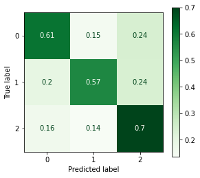
/opt/anaconda3/envs/learn-env-new/lib/python3.8/site-packages/sklearn/ensemble/_base.py:183: DeprecationWarning: `np.int` is a deprecated alias for the builtin `int`. To silence this warning, use `int` by itself. Doing this will not modify any behavior and is safe. When replacing `np.int`, you may wish to use e.g. `np.int64` or `np.int32` to specify the precision. If you wish to review your current use, check the release note link for additional information.
Deprecated in NumPy 1.20; for more details and guidance: https://numpy.org/devdocs/release/1.20.0-notes.html#deprecations
dtype=np.int)
Training Score = 1.00
/opt/anaconda3/envs/learn-env-new/lib/python3.8/site-packages/sklearn/ensemble/_base.py:183: DeprecationWarning: `np.int` is a deprecated alias for the builtin `int`. To silence this warning, use `int` by itself. Doing this will not modify any behavior and is safe. When replacing `np.int`, you may wish to use e.g. `np.int64` or `np.int32` to specify the precision. If you wish to review your current use, check the release note link for additional information.
Deprecated in NumPy 1.20; for more details and guidance: https://numpy.org/devdocs/release/1.20.0-notes.html#deprecations
dtype=np.int)
Test Score = 0.64
---------------------------------------------------------------------------
NameError Traceback (most recent call last)
<ipython-input-103-4c87ca684d6b> in <module>
5 X_train = X_train_vec, y_train=y_train)
6
----> 7 joblib.dump(clf,f"{save_path}random_forest.joblib",compress=3)
NameError: name 'save_path' is not defined
importantces = pd.Series(clf.feature_importances_,
index=text_pipe.named_steps['vectorizer'].get_feature_names())
importantces.sort_values().tail(25).plot(kind='barh')
/opt/anaconda3/envs/learn-env-new/lib/python3.8/site-packages/ipykernel/ipkernel.py:287: DeprecationWarning: `should_run_async` will not call `transform_cell` automatically in the future. Please pass the result to `transformed_cell` argument and any exception that happen during thetransform in `preprocessing_exc_tuple` in IPython 7.17 and above.
and should_run_async(code)
<AxesSubplot:>
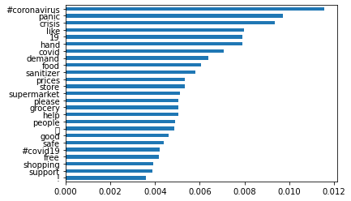
## Checking depths of rf trees
depths = [tree.get_depth() for tree in clf.estimators_]
sns.histplot(depths)
/opt/anaconda3/envs/learn-env-new/lib/python3.8/site-packages/ipykernel/ipkernel.py:287: DeprecationWarning: `should_run_async` will not call `transform_cell` automatically in the future. Please pass the result to `transformed_cell` argument and any exception that happen during thetransform in `preprocessing_exc_tuple` in IPython 7.17 and above.
and should_run_async(code)
<AxesSubplot:>
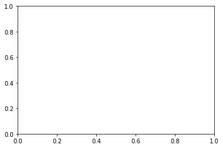
# ## rf gridsearch
# clf = RandomForestClassifier(class_weight='balanced')
# params = {'max_depth':[400,500,600]
# }
# gridsearch = GridSearchCV(clf,params,cv=3, scoring='recall_macro',verbose=True,
# n_jobs=-1)
# gridsearch.fit(X_train_vec,y_train)
# print(gridsearch.best_params_)
# evaluate_classification(gridsearch.best_estimator_, X_test_vec,y_test,X_train = X_train_vec,y_train=y_train)
# joblib.dump(gridsearch.best_estimator_,f"{save_path}gridsearch_random_forest.joblib",compress=3)
/opt/anaconda3/envs/learn-env-new/lib/python3.8/site-packages/ipykernel/ipkernel.py:287: DeprecationWarning: `should_run_async` will not call `transform_cell` automatically in the future. Please pass the result to `transformed_cell` argument and any exception that happen during thetransform in `preprocessing_exc_tuple` in IPython 7.17 and above.
and should_run_async(code)
# gridsearch.best_params_
# pd.DataFrame(gridsearch.cv_results_).set_index('param_max_depth')['mean_test_score']
Naive Bayes#
from sklearn.naive_bayes import MultinomialNB
clf = MultinomialNB(fit_prior=False)#class_weight='balanced')
clf.fit(X_train_vec,y_train)
evaluate_classification(clf,X_test_vec,y_test,X_train = X_train_vec,y_train=y_train)
joblib.dump(clf,f"{save_path}naive_bayes.joblib")
LinearSVC#
# raise Exception('Check SVC parms before running!')
clf = SVC(kernel='linear',class_weight='balanced',verbose=2)
clf.fit(X_train_vec,y_train)
evaluate_classification(clf,X_test_vec,y_test,X_train = X_train_vec,y_train=y_train)
joblib.dump(clf,f"{save_path}svc_linear.joblib")
iNTERPRET#
Testing Loading Models#
import joblib
/opt/anaconda3/envs/learn-env-new/lib/python3.8/site-packages/ipykernel/ipkernel.py:287: DeprecationWarning: `should_run_async` will not call `transform_cell` automatically in the future. Please pass the result to `transformed_cell` argument and any exception that happen during thetransform in `preprocessing_exc_tuple` in IPython 7.17 and above.
and should_run_async(code)
model = joblib.load(f"{save_path}random_forest.joblib")
model
/opt/anaconda3/envs/learn-env-new/lib/python3.8/site-packages/ipykernel/ipkernel.py:287: DeprecationWarning: `should_run_async` will not call `transform_cell` automatically in the future. Please pass the result to `transformed_cell` argument and any exception that happen during thetransform in `preprocessing_exc_tuple` in IPython 7.17 and above.
and should_run_async(code)
---------------------------------------------------------------------------
FileNotFoundError Traceback (most recent call last)
<ipython-input-115-871f64ebbae8> in <module>
----> 1 model = joblib.load(f"{save_path}random_forest.joblib")
2 model
/opt/anaconda3/envs/learn-env-new/lib/python3.8/site-packages/joblib/numpy_pickle.py in load(filename, mmap_mode)
575 obj = _unpickle(fobj)
576 else:
--> 577 with open(filename, 'rb') as f:
578 with _read_fileobject(f, filename, mmap_mode) as fobj:
579 if isinstance(fobj, str):
FileNotFoundError: [Errno 2] No such file or directory: './models/random_forest.joblib'
text_pipe.named_steps['vectorizer'].get_feature_names()[:5]
importantces = pd.Series(model.feature_importances_,
index=text_pipe.named_steps['vectorizer'].get_feature_names())
importantces.sort_values().tail(25).plot(kind='barh')
CONCLUSIONS & RECOMMENDATIONS#
Summarize your conclusions and bullet-point your list of recommendations, which are based on your modeling results.
Combining Spacy and Scattertext#
# # Visit https://spacy.io/usage for isntallation tool
# # !python -m spacy download en_core_web_sm
# import spacy
# nlp = spacy.load('en_core_web_sm')
# nlp.pipeline
# nlp.disable_pipes('tagger','ner')
# nlp.pipeline
#https://colab.research.google.com/github/DerwenAI/spaCy_tuTorial/blob/master/spaCy_tuTorial.ipynb#scrollTo=Bjz8pBV5D1r-
# !pip install scattertext
# df
# import scattertext as st
# st_corpus = st.CorpusFromPandas(df,
# category_col="SimpleSentiment",
# text_col="OriginalTweet",
# nlp=nlp).build()
# df[]
# st_html = st.produce_scattertext_explorer(
# st_corpus,
# category="Negative",
# category_name="Negative Tweets",
# not_category_name="Positive Tweets",
# width_in_pixels=1000,
# metadata=df[['Location','TweetAt']]#convention_df["speaker"]
# )
# from IPython.display import IFrame
# file_name = "scattertext_negative.html"
# with open(file_name, "wb") as f:
# f.write(st_html.encode("utf-8"))
# # IFrame(src=file_name, width = 1200, height=700)